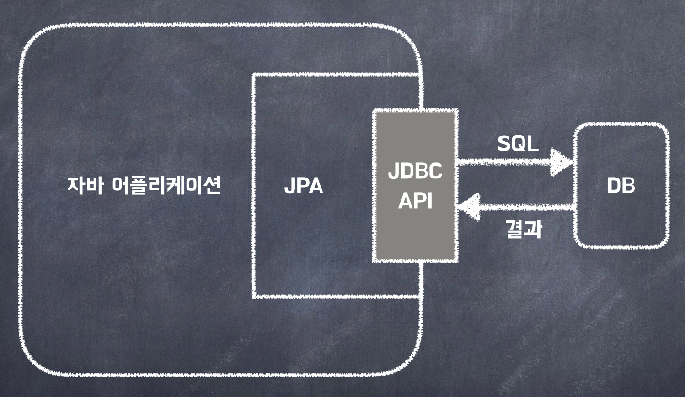
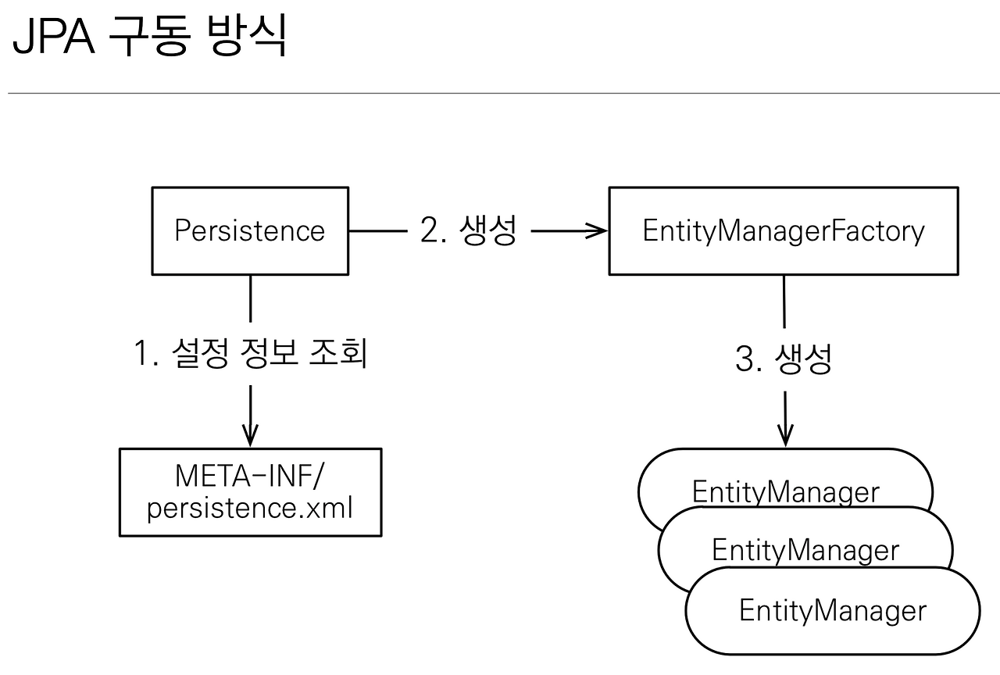
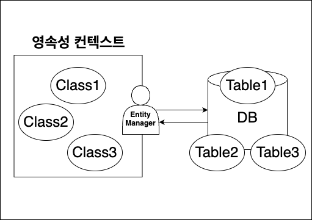
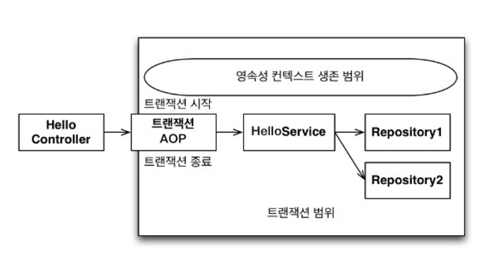
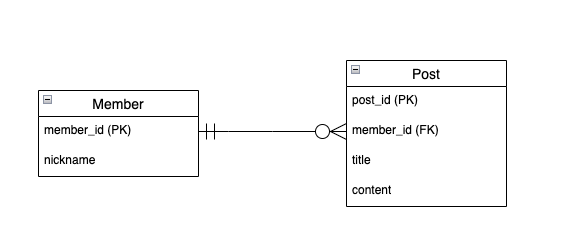

<!DOCTYPE html>
<html lang="ko" dir="ltr"><head><title>JPA 기초</title><meta charset="utf-8"/><link rel="preload" href="../../index-c2304d2c.css" as="style"/><link rel="preload" href="../../prescript-2bfc6315.js" as="script"/><link rel="preconnect" href="https://cdnjs.cloudflare.com" crossorigin="anonymous"/><meta name="viewport" content="width=device-width, initial-scale=1.0"/><meta name="og:site_name" content="기술 노트"/><meta property="og:title" content="JPA 기초"/><meta property="og:type" content="website"/><meta name="twitter:card" content="summary_large_image"/><meta name="twitter:title" content="JPA 기초"/><meta name="twitter:description" content="학습과 실험을 정리한 노트입니다. 표시된 날짜는 원본 기록일입니다."/><meta property="og:description" content="학습과 실험을 정리한 노트입니다. 표시된 날짜는 원본 기록일입니다."/><meta property="og:image:alt" content="학습과 실험을 정리한 노트입니다. 표시된 날짜는 원본 기록일입니다."/><meta property="og:image" content="https://yeongseoksong.github.io/blog/static/og-image.png"/><meta property="og:image:url" content="https://yeongseoksong.github.io/blog/static/og-image.png"/><meta name="twitter:image" content="https://yeongseoksong.github.io/blog/static/og-image.png"/><meta property="og:image:type" content="image/.png"/><meta property="twitter:domain" content="yeongseoksong.github.io/blog"/><meta property="og:url" content="https://yeongseoksong.github.io/blog/메모/jpa/jpa-기초"/><meta property="twitter:url" content="https://yeongseoksong.github.io/blog/메모/jpa/jpa-기초"/><link rel="icon" href="../../static/icon.png"/><meta name="description" content="학습과 실험을 정리한 노트입니다. 표시된 날짜는 원본 기록일입니다."/><meta name="generator" content="Quartz"/><link href="../../index-c2304d2c.css" rel="stylesheet" type="text/css" data-persist="true"/><link href="../../component-735924e0.css" rel="stylesheet" type="text/css" data-persist="true"/><link href="../../component-589c1cea.css" rel="stylesheet" type="text/css" data-persist="true"/><link href="../../component-2911f5d1.css" rel="stylesheet" type="text/css" data-persist="true"/><link href="../../component-e1e93ade.css" rel="stylesheet" type="text/css" data-persist="true"/><link href="../../component-53b25b2b.css" rel="stylesheet" type="text/css" data-persist="true"/><link href="../../component-c93c6a44.css" rel="stylesheet" type="text/css" data-persist="true"/><link href="../../component-8a06014f.css" rel="stylesheet" type="text/css" data-persist="true"/><link href="../../component-77d6a441.css" rel="stylesheet" type="text/css" data-persist="true"/><link href="../../component-6ee21cee.css" rel="stylesheet" type="text/css" data-persist="true"/><link href="../../component-b43df3ac.css" rel="stylesheet" type="text/css" data-persist="true"/><link href="../../component-34bdfded.css" rel="stylesheet" type="text/css" data-persist="true"/><link href="../../component-9406c2cd.css" rel="stylesheet" type="text/css" data-persist="true"/><link href="../../component-642859cd.css" rel="stylesheet" type="text/css" data-persist="true"/><link href="../../component-4abc06bd.css" rel="stylesheet" type="text/css" data-persist="true"/><link href="../../component-274a3dfe.css" rel="stylesheet" type="text/css" data-persist="true"/><link href="../../component-94cb6c84.css" rel="stylesheet" type="text/css" data-persist="true"/><link href="../../static/resource-style-a5c806d2.css" rel="stylesheet" type="text/css" data-persist="true"/><link href="../../static/resource-style-0be4fa7f.css" rel="stylesheet" type="text/css" data-persist="true"/><link href="../../static/resource-style-d2eefd3a.css" rel="stylesheet" type="text/css" data-persist="true"/><link href="../../static/resource-style-a71023bb.css" rel="stylesheet" type="text/css" data-persist="true"/><link href="../../static/resource-style-89d3cd78.css" rel="stylesheet" type="text/css" data-persist="true"/><link href="https://cdn.jsdelivr.net/npm/katex@0.16.11/dist/katex.min.css" rel="stylesheet" type="text/css" data-persist="true"/><script src="../../prescript-2bfc6315.js" type="application/javascript" data-persist="true"></script><script type="application/javascript" data-persist="true">const fetchData = fetch("../../static/contentIndex.json").then(r => { if (!r.ok) throw new Error("HTTP " + r.status); return r.json() }).catch(e => { console.warn("[Quartz] Could not load ../../static/contentIndex.json (" + e.message + "); is configuration.contentIndex disabled?"); return {} });window.quartzStaticUrl = new URL("../../static/", location.href).href</script></head><body data-slug="메모/jpa/jpa-기초" data-basepath="/blog"><div id="quartz-root" class="page" data-frame="default"><div id="quartz-body"><div class="left sidebar" data-sidebar-mode="fit"><h2 class="page-title" data-quartz-plugin="page-title" data-quartz-component="PageTitle"><a href="../..">기술 노트</a></h2><div class="mobile-only"><div class="spacer" data-quartz-plugin="spacer" data-quartz-component="Spacer"></div></div><div class="flex-component" style="flex-direction: row; flex-wrap: nowrap; gap: 0.5rem;"><div style="flex-grow: 1; flex-shrink: 1; flex-basis: auto; order: 0; align-self: center; justify-self: center;"><div class="search" data-quartz-plugin="search" data-quartz-component="Search"><button class="search-button" aria-label="검색" aria-expanded="false"><svg role="img" xmlns="http://www.w3.org/2000/svg" viewBox="0 0 19.9 19.7"><title>Search</title><g class="search-path" fill="none"><path stroke-linecap="square" d="M18.5 18.3l-5.4-5.4"></path><circle cx="8" cy="8" r="7"></circle></g></svg><p>검색</p></button><div class="search-container"><div class="search-space"><input autocomplete="off" class="search-bar" name="search" type="text" aria-label="검색어를 입력하세요" placeholder="검색어를 입력하세요"/><div class="search-layout" data-preview="true" data-field-priority="[&quot;title&quot;,&quot;content&quot;,&quot;tags&quot;]"></div></div></div></div></div><div style="flex-grow: 0; flex-shrink: 1; flex-basis: auto; order: 0; align-self: center; justify-self: center;"><button class="darkmode" aria-label="다크 모드" data-quartz-plugin="darkmode" data-quartz-component="Darkmode"><svg xmlns="http://www.w3.org/2000/svg" xmlns:xlink="http://www.w3.org/1999/xlink" version="1.1" class="dayIcon" x="0px" y="0px" viewBox="0 0 35 35" style="enable-background:new 0 0 35 35" xml:space="preserve" aria-label="다크 모드"><title>다크 모드</title><path d="M6,17.5C6,16.672,5.328,16,4.5,16h-3C0.672,16,0,16.672,0,17.5    S0.672,19,1.5,19h3C5.328,19,6,18.328,6,17.5z M7.5,26c-0.414,0-0.789,0.168-1.061,0.439l-2,2C4.168,28.711,4,29.086,4,29.5    C4,30.328,4.671,31,5.5,31c0.414,0,0.789-0.168,1.06-0.44l2-2C8.832,28.289,9,27.914,9,27.5C9,26.672,8.329,26,7.5,26z M17.5,6    C18.329,6,19,5.328,19,4.5v-3C19,0.672,18.329,0,17.5,0S16,0.672,16,1.5v3C16,5.328,16.671,6,17.5,6z M27.5,9    c0.414,0,0.789-0.168,1.06-0.439l2-2C30.832,6.289,31,5.914,31,5.5C31,4.672,30.329,4,29.5,4c-0.414,0-0.789,0.168-1.061,0.44    l-2,2C26.168,6.711,26,7.086,26,7.5C26,8.328,26.671,9,27.5,9z M6.439,8.561C6.711,8.832,7.086,9,7.5,9C8.328,9,9,8.328,9,7.5    c0-0.414-0.168-0.789-0.439-1.061l-2-2C6.289,4.168,5.914,4,5.5,4C4.672,4,4,4.672,4,5.5c0,0.414,0.168,0.789,0.439,1.06    L6.439,8.561z M33.5,16h-3c-0.828,0-1.5,0.672-1.5,1.5s0.672,1.5,1.5,1.5h3c0.828,0,1.5-0.672,1.5-1.5S34.328,16,33.5,16z     M28.561,26.439C28.289,26.168,27.914,26,27.5,26c-0.828,0-1.5,0.672-1.5,1.5c0,0.414,0.168,0.789,0.439,1.06l2,2    C28.711,30.832,29.086,31,29.5,31c0.828,0,1.5-0.672,1.5-1.5c0-0.414-0.168-0.789-0.439-1.061L28.561,26.439z M17.5,29    c-0.829,0-1.5,0.672-1.5,1.5v3c0,0.828,0.671,1.5,1.5,1.5s1.5-0.672,1.5-1.5v-3C19,29.672,18.329,29,17.5,29z M17.5,7    C11.71,7,7,11.71,7,17.5S11.71,28,17.5,28S28,23.29,28,17.5S23.29,7,17.5,7z M17.5,25c-4.136,0-7.5-3.364-7.5-7.5    c0-4.136,3.364-7.5,7.5-7.5c4.136,0,7.5,3.364,7.5,7.5C25,21.636,21.636,25,17.5,25z"></path></svg><svg xmlns="http://www.w3.org/2000/svg" xmlns:xlink="http://www.w3.org/1999/xlink" version="1.1" class="nightIcon" x="0px" y="0px" viewBox="0 0 100 100" style="enable-background:new 0 0 100 100" xml:space="preserve" aria-label="라이트 모드"><title>라이트 모드</title><path d="M96.76,66.458c-0.853-0.852-2.15-1.064-3.23-0.534c-6.063,2.991-12.858,4.571-19.655,4.571  C62.022,70.495,50.88,65.88,42.5,57.5C29.043,44.043,25.658,23.536,34.076,6.47c0.532-1.08,0.318-2.379-0.534-3.23  c-0.851-0.852-2.15-1.064-3.23-0.534c-4.918,2.427-9.375,5.619-13.246,9.491c-9.447,9.447-14.65,22.008-14.65,35.369  c0,13.36,5.203,25.921,14.65,35.368s22.008,14.65,35.368,14.65c13.361,0,25.921-5.203,35.369-14.65  c3.872-3.871,7.064-8.328,9.491-13.246C97.826,68.608,97.611,67.309,96.76,66.458z"></path></svg></button></div><div style="flex-grow: 0; flex-shrink: 1; flex-basis: auto; order: 0; align-self: center; justify-self: center;"><button class="readermode" aria-label="리더 모드" data-quartz-plugin="reader-mode" data-quartz-component="ReaderMode"><svg xmlns="http://www.w3.org/2000/svg" xmlns:xlink="http://www.w3.org/1999/xlink" version="1.1" class="readerIcon" fill="currentColor" stroke="currentColor" stroke-width="0.2" stroke-linecap="round" stroke-linejoin="round" width="64px" height="64px" viewBox="0 0 24 24" aria-label="리더 모드"><title>리더 모드</title><g transform="translate(-1.8, -1.8) scale(1.15, 1.2)"><path d="M8.9891247,2.5 C10.1384702,2.5 11.2209868,2.96705384 12.0049645,3.76669482 C12.7883914,2.96705384 13.8709081,2.5 15.0202536,2.5 L18.7549359,2.5 C19.1691495,2.5 19.5049359,2.83578644 19.5049359,3.25 L19.5046891,4.004 L21.2546891,4.00457396 C21.6343849,4.00457396 21.9481801,4.28672784 21.9978425,4.6528034 L22.0046891,4.75457396 L22.0046891,20.25 C22.0046891,20.6296958 21.7225353,20.943491 21.3564597,20.9931534 L21.2546891,21 L2.75468914,21 C2.37499337,21 2.06119817,20.7178461 2.01153575,20.3517706 L2.00468914,20.25 L2.00468914,4.75457396 C2.00468914,4.37487819 2.28684302,4.061083 2.65291858,4.01142057 L2.75468914,4.00457396 L4.50368914,4.004 L4.50444233,3.25 C4.50444233,2.87030423 4.78659621,2.55650904 5.15267177,2.50684662 L5.25444233,2.5 L8.9891247,2.5 Z M4.50368914,5.504 L3.50468914,5.504 L3.50468914,19.5 L10.9478955,19.4998273 C10.4513189,18.9207296 9.73864328,18.5588115 8.96709342,18.5065584 L8.77307039,18.5 L5.25444233,18.5 C4.87474657,18.5 4.56095137,18.2178461 4.51128895,17.8517706 L4.50444233,17.75 L4.50368914,5.504 Z M19.5049359,17.75 C19.5049359,18.1642136 19.1691495,18.5 18.7549359,18.5 L15.2363079,18.5 C14.3910149,18.5 13.5994408,18.8724714 13.0614828,19.4998273 L20.5046891,19.5 L20.5046891,5.504 L19.5046891,5.504 L19.5049359,17.75 Z M18.0059359,3.999 L15.0202536,4 L14.8259077,4.00692283 C13.9889509,4.06666544 13.2254227,4.50975805 12.7549359,5.212 L12.7549359,17.777 L12.7782651,17.7601316 C13.4923805,17.2719483 14.3447024,17 15.2363079,17 L18.0059359,16.999 L18.0056891,4.798 L18.0033792,4.75457396 L18.0056891,4.71 L18.0059359,3.999 Z M8.9891247,4 L6.00368914,3.999 L6.00599909,4.75457396 L6.00599909,4.75457396 L6.00368914,4.783 L6.00368914,16.999 L8.77307039,17 C9.57551536,17 10.3461406,17.2202781 11.0128313,17.6202194 L11.2536891,17.776 L11.2536891,5.211 C10.8200889,4.56369974 10.1361548,4.13636104 9.37521067,4.02745763 L9.18347055,4.00692283 L8.9891247,4 Z"></path></g></svg></button></div></div><div class="explorer nav-files-container" data-behavior="link" data-collapsed="collapsed" data-savestate="true" data-data-fns="{&quot;order&quot;:[&quot;filter&quot;,&quot;map&quot;,&quot;sort&quot;],&quot;sortFn&quot;:&quot;(a, b) => {\n    if (!a.isFolder &amp;&amp; !b.isFolder || a.isFolder &amp;&amp; b.isFolder) {\n      return (a.displayName || \&quot;\&quot;).localeCompare(b.displayName || \&quot;\&quot;, void 0, {\n        numeric: true,\n        sensitivity: \&quot;base\&quot;\n      });\n    }\n    if (!a.isFolder &amp;&amp; b.isFolder) {\n      return 1;\n    }\n    return -1;\n  }&quot;,&quot;filterFn&quot;:&quot;(node) => node.slugSegment !== \&quot;tags\&quot;&quot;,&quot;mapFn&quot;:&quot;(node) => {\n    return node;\n  }&quot;}" data-quartz-plugin="explorer" data-quartz-component="Explorer"><button type="button" class="explorer-toggle mobile-explorer hide-until-loaded" data-mobile="true" aria-controls="explorer-45" aria-label="탐색기"><svg xmlns="http://www.w3.org/2000/svg" width="24" height="24" viewBox="0 0 24 24" stroke-width="2" stroke-linecap="round" stroke-linejoin="round" class="lucide-menu"><line x1="4" x2="20" y1="12" y2="12"></line><line x1="4" x2="20" y1="6" y2="6"></line><line x1="4" x2="20" y1="18" y2="18"></line></svg></button><button type="button" class="title-button explorer-toggle desktop-explorer" data-mobile="false" aria-expanded="true"><h2>탐색기</h2><svg xmlns="http://www.w3.org/2000/svg" width="14" height="14" viewBox="5 8 14 8" fill="none" stroke="currentColor" stroke-width="2" stroke-linecap="round" stroke-linejoin="round" class="fold"><polyline points="6 9 12 15 18 9"></polyline></svg></button><div id="explorer-45" class="explorer-content" aria-expanded="false" role="group"><ul class="explorer-ul overflow" id="list-0"><li class="overflow-end"></li></ul></div><template id="template-file"><li><a href="#" class="nav-file-title tree-item-self"></a></li></template><template id="template-folder"><li><div class="folder-container nav-folder-title tree-item-self"><svg xmlns="http://www.w3.org/2000/svg" width="12" height="12" viewBox="5 8 14 8" fill="none" stroke="currentColor" stroke-width="2" stroke-linecap="round" stroke-linejoin="round" class="folder-icon nav-folder-collapse-indicator collapse-icon"><polyline points="6 9 12 15 18 9"></polyline></svg><div><button class="folder-button"><span class="folder-title"></span></button></div></div><div class="folder-outer"><ul class="content tree-item-children"></ul></div></li></template></div></div><div class="center"><div class="page-header"><div class="popover-hint"><nav class="breadcrumb-container" aria-label="breadcrumbs" data-quartz-plugin="breadcrumbs" data-quartz-component="Breadcrumbs"><div class="breadcrumb-element"><a href="../../">Home</a><p> ❯ </p></div><div class="breadcrumb-element"><a href="../../메모/">메모</a><p> ❯ </p></div><div class="breadcrumb-element"><a href="../../메모/jpa/">JPA</a><p> ❯ </p></div><div class="breadcrumb-element"><a href>JPA 기초</a></div></nav><h1 class="article-title" data-quartz-plugin="article-title" data-quartz-component="ArticleTitle">JPA 기초</h1><p show-comma="true" class="content-meta" data-quartz-plugin="content-meta" data-quartz-component="ContentMeta"><time datetime="2024-12-23T00:00:00.000Z">2024년 12월 23일</time><span>19 min read</span></p><ul class="tags" data-quartz-plugin="tag-list" data-quartz-component="TagList"><li><a href="../../tags/topic/jpa" class="internal tag-link">topic/jpa</a></li><li><a href="../../tags/concept/orm" class="internal tag-link">concept/orm</a></li><li><a href="../../tags/concept/transactions" class="internal tag-link">concept/transactions</a></li></ul></div></div><article class="popover-hint" data-quartz-plugin="content-page" data-quartz-component="ContentPage"><div class="markdown-preview-view markdown-rendered"><h1 id="1--spring-transaction"><span id="1-spring-transaction" class="heading-alias"></span>1.  Spring Transaction<a role="anchor" aria-hidden tabindex="-1" data-no-popover href="#1--spring-transaction" class="internal internal-link"><svg width="18" height="18" viewBox="0 0 24 24" fill="none" stroke="currentColor" stroke-width="2" stroke-linecap="round" stroke-linejoin="round"><path d="M10 13a5 5 0 0 0 7.54.54l3-3a5 5 0 0 0-7.07-7.07l-1.72 1.71"></path><path d="M14 11a5 5 0 0 0-7.54-.54l-3 3a5 5 0 0 0 7.07 7.07l1.71-1.71"></path></svg></a></h1>
<figure data-rehype-pretty-code-figure><pre tabindex="0" data-language="java" data-theme="github-light github-dark"><code data-language="java" data-theme="github-light github-dark" style="display:grid;"><span data-line><span style="--shiki-light:#24292E;--shiki-dark:#E1E4E8;" data-token-type="punctuation">@</span><span style="--shiki-light:#D73A49;--shiki-dark:#F97583;" data-token-type="keyword">SpringBootTest</span><span style="--shiki-light:#24292E;--shiki-dark:#E1E4E8;">  </span></span>
<span data-line><span style="--shiki-light:#6A737D;--shiki-dark:#6A737D;" data-token-type="comment">//@AutoConfigureTestDatabase(replace = AutoConfigureTestDatabase.Replace.NONE)  </span></span>
<span data-line><span style="--shiki-light:#D73A49;--shiki-dark:#F97583;" data-token-type="keyword">public</span><span style="--shiki-light:#D73A49;--shiki-dark:#F97583;" data-token-type="keyword"> class</span><span style="--shiki-light:#6F42C1;--shiki-dark:#B392F0;" data-token-type="property"> SpringBootJpaTest</span><span style="--shiki-light:#24292E;--shiki-dark:#E1E4E8;" data-token-type="punctuation"> {  </span></span>
<span data-line><span style="--shiki-light:#24292E;--shiki-dark:#E1E4E8;">  </span></span>
<span data-line><span style="--shiki-light:#24292E;--shiki-dark:#E1E4E8;" data-token-type="punctuation">    @</span><span style="--shiki-light:#D73A49;--shiki-dark:#F97583;" data-token-type="keyword">Autowired</span><span style="--shiki-light:#24292E;--shiki-dark:#E1E4E8;">  </span></span>
<span data-line><span style="--shiki-light:#24292E;--shiki-dark:#E1E4E8;" data-token-type="keyword">    EntityManager em;  </span></span>
<span data-line><span style="--shiki-light:#24292E;--shiki-dark:#E1E4E8;" data-token-type="punctuation">    @</span><span style="--shiki-light:#D73A49;--shiki-dark:#F97583;" data-token-type="keyword">Autowired</span><span style="--shiki-light:#24292E;--shiki-dark:#E1E4E8;">  </span></span>
<span data-line><span style="--shiki-light:#24292E;--shiki-dark:#E1E4E8;" data-token-type="keyword">    EntityManagerFactory emf;  </span></span>
<span data-line><span style="--shiki-light:#24292E;--shiki-dark:#E1E4E8;">  </span></span>
<span data-line><span style="--shiki-light:#24292E;--shiki-dark:#E1E4E8;" data-token-type="punctuation">    @</span><span style="--shiki-light:#D73A49;--shiki-dark:#F97583;" data-token-type="keyword">Test</span><span style="--shiki-light:#24292E;--shiki-dark:#E1E4E8;">  </span></span>
<span data-line><span style="--shiki-light:#6A737D;--shiki-dark:#6A737D;" data-token-type="comment">        // 트랜잭션 없이 엔티티 매니저 사용  </span></span>
<span data-line><span style="--shiki-light:#D73A49;--shiki-dark:#F97583;" data-token-type="keyword">    void</span><span style="--shiki-light:#6F42C1;--shiki-dark:#B392F0;" data-token-type="function"> 트랜잭션_없이</span><span style="--shiki-light:#24292E;--shiki-dark:#E1E4E8;" data-token-type="punctuation">(){  </span></span>
<span data-line><span style="--shiki-light:#24292E;--shiki-dark:#E1E4E8;" data-token-type="keyword">        User  user </span><span style="--shiki-light:#D73A49;--shiki-dark:#F97583;" data-token-type="operator">=</span><span style="--shiki-light:#D73A49;--shiki-dark:#F97583;" data-token-type="keyword"> new</span><span style="--shiki-light:#6F42C1;--shiki-dark:#B392F0;" data-token-type="function"> User</span><span style="--shiki-light:#24292E;--shiki-dark:#E1E4E8;" data-token-type="punctuation">();  </span></span>
<span data-line><span style="--shiki-light:#24292E;--shiki-dark:#E1E4E8;" data-token-type="normal">        user.</span><span style="--shiki-light:#6F42C1;--shiki-dark:#B392F0;" data-token-type="function">setId</span><span style="--shiki-light:#24292E;--shiki-dark:#E1E4E8;" data-token-type="punctuation">(</span><span style="--shiki-light:#005CC5;--shiki-dark:#79B8FF;" data-token-type="value">1L</span><span style="--shiki-light:#24292E;--shiki-dark:#E1E4E8;" data-token-type="punctuation">);  </span></span>
<span data-line><span style="--shiki-light:#24292E;--shiki-dark:#E1E4E8;" data-token-type="normal">        user.</span><span style="--shiki-light:#6F42C1;--shiki-dark:#B392F0;" data-token-type="function">setMsg</span><span style="--shiki-light:#24292E;--shiki-dark:#E1E4E8;" data-token-type="punctuation">(</span><span style="--shiki-light:#032F62;--shiki-dark:#9ECBFF;" data-token-type="string">&quot;테스트&quot;</span><span style="--shiki-light:#24292E;--shiki-dark:#E1E4E8;" data-token-type="punctuation">);  </span></span>
<span data-line><span style="--shiki-light:#24292E;--shiki-dark:#E1E4E8;" data-token-type="normal">        em.</span><span style="--shiki-light:#6F42C1;--shiki-dark:#B392F0;" data-token-type="function">persist</span><span style="--shiki-light:#24292E;--shiki-dark:#E1E4E8;" data-token-type="punctuation">(user);  </span></span>
<span data-line><span style="--shiki-light:#24292E;--shiki-dark:#E1E4E8;" data-token-type="punctuation">    }  </span></span>
<span data-line><span style="--shiki-light:#24292E;--shiki-dark:#E1E4E8;" data-token-type="punctuation">    @</span><span style="--shiki-light:#D73A49;--shiki-dark:#F97583;" data-token-type="keyword">Test</span><span style="--shiki-light:#24292E;--shiki-dark:#E1E4E8;">  </span></span>
<span data-line><span style="--shiki-light:#D73A49;--shiki-dark:#F97583;" data-token-type="keyword">    void</span><span style="--shiki-light:#6F42C1;--shiki-dark:#B392F0;" data-token-type="function"> 트랜잭션_명시적으로_호출</span><span style="--shiki-light:#24292E;--shiki-dark:#E1E4E8;" data-token-type="punctuation">(){  </span></span>
<span data-line><span style="--shiki-light:#24292E;--shiki-dark:#E1E4E8;" data-token-type="keyword">        EntityManager em </span><span style="--shiki-light:#D73A49;--shiki-dark:#F97583;" data-token-type="operator">=</span><span style="--shiki-light:#24292E;--shiki-dark:#E1E4E8;" data-token-type="normal"> emf.</span><span style="--shiki-light:#6F42C1;--shiki-dark:#B392F0;" data-token-type="function">createEntityManager</span><span style="--shiki-light:#24292E;--shiki-dark:#E1E4E8;" data-token-type="punctuation">();  </span></span>
<span data-line><span style="--shiki-light:#24292E;--shiki-dark:#E1E4E8;" data-token-type="keyword">        EntityTransaction transaction</span><span style="--shiki-light:#D73A49;--shiki-dark:#F97583;" data-token-type="operator">=</span><span style="--shiki-light:#24292E;--shiki-dark:#E1E4E8;" data-token-type="normal">em.</span><span style="--shiki-light:#6F42C1;--shiki-dark:#B392F0;" data-token-type="function">getTransaction</span><span style="--shiki-light:#24292E;--shiki-dark:#E1E4E8;" data-token-type="punctuation">();  </span></span>
<span data-line><span style="--shiki-light:#D73A49;--shiki-dark:#F97583;" data-token-type="keyword">        try</span><span style="--shiki-light:#24292E;--shiki-dark:#E1E4E8;" data-token-type="punctuation"> {  </span></span>
<span data-line><span style="--shiki-light:#24292E;--shiki-dark:#E1E4E8;" data-token-type="normal">                transaction.</span><span style="--shiki-light:#6F42C1;--shiki-dark:#B392F0;" data-token-type="function">begin</span><span style="--shiki-light:#24292E;--shiki-dark:#E1E4E8;" data-token-type="punctuation">();  </span></span>
<span data-line><span style="--shiki-light:#24292E;--shiki-dark:#E1E4E8;" data-token-type="keyword">                User entity </span><span style="--shiki-light:#D73A49;--shiki-dark:#F97583;" data-token-type="operator">=</span><span style="--shiki-light:#D73A49;--shiki-dark:#F97583;" data-token-type="keyword"> new</span><span style="--shiki-light:#6F42C1;--shiki-dark:#B392F0;" data-token-type="function"> User</span><span style="--shiki-light:#24292E;--shiki-dark:#E1E4E8;" data-token-type="punctuation">();  </span></span>
<span data-line><span style="--shiki-light:#24292E;--shiki-dark:#E1E4E8;" data-token-type="normal">                entity.</span><span style="--shiki-light:#6F42C1;--shiki-dark:#B392F0;" data-token-type="function">setMsg</span><span style="--shiki-light:#24292E;--shiki-dark:#E1E4E8;" data-token-type="punctuation">(</span><span style="--shiki-light:#032F62;--shiki-dark:#9ECBFF;" data-token-type="string">&quot;Test Entity&quot;</span><span style="--shiki-light:#24292E;--shiki-dark:#E1E4E8;" data-token-type="punctuation">);  </span></span>
<span data-line><span style="--shiki-light:#24292E;--shiki-dark:#E1E4E8;" data-token-type="normal">                em.</span><span style="--shiki-light:#6F42C1;--shiki-dark:#B392F0;" data-token-type="function">persist</span><span style="--shiki-light:#24292E;--shiki-dark:#E1E4E8;" data-token-type="punctuation">(entity);  </span></span>
<span data-line><span style="--shiki-light:#24292E;--shiki-dark:#E1E4E8;" data-token-type="normal">                transaction.</span><span style="--shiki-light:#6F42C1;--shiki-dark:#B392F0;" data-token-type="function">commit</span><span style="--shiki-light:#24292E;--shiki-dark:#E1E4E8;" data-token-type="punctuation">(); }  </span></span>
<span data-line><span style="--shiki-light:#24292E;--shiki-dark:#E1E4E8;">  </span></span>
<span data-line><span style="--shiki-light:#D73A49;--shiki-dark:#F97583;" data-token-type="keyword">        catch</span><span style="--shiki-light:#24292E;--shiki-dark:#E1E4E8;" data-token-type="punctuation"> (Exception </span><span style="--shiki-light:#E36209;--shiki-dark:#FFAB70;" data-token-type="important">e</span><span style="--shiki-light:#24292E;--shiki-dark:#E1E4E8;" data-token-type="punctuation">) {  </span></span>
<span data-line><span style="--shiki-light:#24292E;--shiki-dark:#E1E4E8;" data-token-type="normal">                transaction.</span><span style="--shiki-light:#6F42C1;--shiki-dark:#B392F0;" data-token-type="function">rollback</span><span style="--shiki-light:#24292E;--shiki-dark:#E1E4E8;" data-token-type="punctuation">();  </span></span>
<span data-line><span style="--shiki-light:#24292E;--shiki-dark:#E1E4E8;" data-token-type="punctuation">            }        </span><span style="--shiki-light:#D73A49;--shiki-dark:#F97583;" data-token-type="keyword">finally</span><span style="--shiki-light:#24292E;--shiki-dark:#E1E4E8;" data-token-type="punctuation"> {  </span></span>
<span data-line><span style="--shiki-light:#24292E;--shiki-dark:#E1E4E8;" data-token-type="normal">                em.</span><span style="--shiki-light:#6F42C1;--shiki-dark:#B392F0;" data-token-type="function">close</span><span style="--shiki-light:#24292E;--shiki-dark:#E1E4E8;" data-token-type="punctuation">();  </span></span>
<span data-line><span style="--shiki-light:#24292E;--shiki-dark:#E1E4E8;" data-token-type="punctuation">        }    }  </span></span>
<span data-line><span style="--shiki-light:#24292E;--shiki-dark:#E1E4E8;" data-token-type="punctuation">    @</span><span style="--shiki-light:#D73A49;--shiki-dark:#F97583;" data-token-type="keyword">Test</span><span style="--shiki-light:#24292E;--shiki-dark:#E1E4E8;">  </span></span>
<span data-line><span style="--shiki-light:#24292E;--shiki-dark:#E1E4E8;" data-token-type="punctuation">    @</span><span style="--shiki-light:#D73A49;--shiki-dark:#F97583;" data-token-type="keyword">Transactional</span><span style="--shiki-light:#D73A49;--shiki-dark:#F97583;" data-token-type="keyword">    void</span><span style="--shiki-light:#6F42C1;--shiki-dark:#B392F0;" data-token-type="function"> 트랜잭션_어노테이션_사용</span><span style="--shiki-light:#24292E;--shiki-dark:#E1E4E8;" data-token-type="punctuation">() {  </span></span>
<span data-line><span style="--shiki-light:#24292E;--shiki-dark:#E1E4E8;" data-token-type="keyword">        User user </span><span style="--shiki-light:#D73A49;--shiki-dark:#F97583;" data-token-type="operator">=</span><span style="--shiki-light:#D73A49;--shiki-dark:#F97583;" data-token-type="keyword"> new</span><span style="--shiki-light:#6F42C1;--shiki-dark:#B392F0;" data-token-type="function"> User</span><span style="--shiki-light:#24292E;--shiki-dark:#E1E4E8;" data-token-type="punctuation">();  </span></span>
<span data-line><span style="--shiki-light:#24292E;--shiki-dark:#E1E4E8;" data-token-type="normal">        user.</span><span style="--shiki-light:#6F42C1;--shiki-dark:#B392F0;" data-token-type="function">setId</span><span style="--shiki-light:#24292E;--shiki-dark:#E1E4E8;" data-token-type="punctuation">(</span><span style="--shiki-light:#005CC5;--shiki-dark:#79B8FF;" data-token-type="value">1L</span><span style="--shiki-light:#24292E;--shiki-dark:#E1E4E8;" data-token-type="punctuation">);  </span></span>
<span data-line><span style="--shiki-light:#24292E;--shiki-dark:#E1E4E8;" data-token-type="normal">        user.</span><span style="--shiki-light:#6F42C1;--shiki-dark:#B392F0;" data-token-type="function">setMsg</span><span style="--shiki-light:#24292E;--shiki-dark:#E1E4E8;" data-token-type="punctuation">(</span><span style="--shiki-light:#032F62;--shiki-dark:#9ECBFF;" data-token-type="string">&quot;테스트&quot;</span><span style="--shiki-light:#24292E;--shiki-dark:#E1E4E8;" data-token-type="punctuation">);  </span></span>
<span data-line><span style="--shiki-light:#24292E;--shiki-dark:#E1E4E8;" data-token-type="normal">        em.</span><span style="--shiki-light:#6F42C1;--shiki-dark:#B392F0;" data-token-type="function">persist</span><span style="--shiki-light:#24292E;--shiki-dark:#E1E4E8;" data-token-type="punctuation">(user);  </span></span>
<span data-line><span style="--shiki-light:#24292E;--shiki-dark:#E1E4E8;" data-token-type="punctuation">    }}</span></span></code></pre></figure>
<h1 id="2-orm-이란">2. Orm 이란?<a role="anchor" aria-hidden tabindex="-1" data-no-popover href="#2-orm-이란" class="internal internal-link"><svg width="18" height="18" viewBox="0 0 24 24" fill="none" stroke="currentColor" stroke-width="2" stroke-linecap="round" stroke-linejoin="round"><path d="M10 13a5 5 0 0 0 7.54.54l3-3a5 5 0 0 0-7.07-7.07l-1.72 1.71"></path><path d="M14 11a5 5 0 0 0-7.54-.54l-3 3a5 5 0 0 0 7.07 7.07l1.71-1.71"></path></svg></a></h1>
<h2 id="21-object-relational-mapping">2.1 Object-Relational Mapping<a role="anchor" aria-hidden tabindex="-1" data-no-popover href="#21-object-relational-mapping" class="internal internal-link"><svg width="18" height="18" viewBox="0 0 24 24" fill="none" stroke="currentColor" stroke-width="2" stroke-linecap="round" stroke-linejoin="round"><path d="M10 13a5 5 0 0 0 7.54.54l3-3a5 5 0 0 0-7.07-7.07l-1.72 1.71"></path><path d="M14 11a5 5 0 0 0-7.54-.54l-3 3a5 5 0 0 0 7.07 7.07l1.71-1.71"></path></svg></a></h2>
<hr/>
<ul>
<li><strong>객체 지향 언어</strong>인 자바와 <strong>RDBMS</strong> 의 패러다임은  일치 하지 않는다.
<ul>
<li>객체는 <strong>참조</strong> 를 통한 <strong>단방향</strong> 연관관계</li>
<li>RDBMS 는 <strong>왜래키</strong>를 통한 <strong>양방향</strong> 연관 관계</li>
<li>객체는 <strong>클래스</strong>를 사용</li>
<li>RDBM 는 <strong>테이블</strong>을 사용</li>
</ul>
</li>
</ul>
<figure data-rehype-pretty-code-figure><pre tabindex="0" data-language="java" data-theme="github-light github-dark"><code data-language="java" data-theme="github-light github-dark" style="display:grid;"><span data-line><span style="--shiki-light:#D73A49;--shiki-dark:#F97583;" data-token-type="keyword">public</span><span style="--shiki-light:#D73A49;--shiki-dark:#F97583;" data-token-type="keyword"> class</span><span style="--shiki-light:#6F42C1;--shiki-dark:#B392F0;" data-token-type="property"> Member</span><span style="--shiki-light:#24292E;--shiki-dark:#E1E4E8;" data-token-type="punctuation">{</span></span>
<span data-line><span style="--shiki-light:#24292E;--shiki-dark:#E1E4E8;" data-token-type="keyword">	Team team; </span><span style="--shiki-light:#6A737D;--shiki-dark:#6A737D;" data-token-type="comment">// 단방향	</span></span>
<span data-line><span style="--shiki-light:#24292E;--shiki-dark:#E1E4E8;" data-token-type="punctuation">}</span></span></code></pre></figure>
<figure data-rehype-pretty-code-figure><pre tabindex="0" data-language="sql" data-theme="github-light github-dark"><code data-language="sql" data-theme="github-light github-dark" style="display:grid;"><span data-line><span style="--shiki-light:#D73A49;--shiki-dark:#F97583;" data-token-type="keyword">SELECT</span><span style="--shiki-light:#D73A49;--shiki-dark:#F97583;" data-token-type="operator"> *</span><span style="--shiki-light:#24292E;--shiki-dark:#E1E4E8;"> </span></span>
<span data-line><span style="--shiki-light:#D73A49;--shiki-dark:#F97583;" data-token-type="keyword">FROM</span><span style="--shiki-light:#24292E;--shiki-dark:#E1E4E8;"> member m </span></span>
<span data-line><span style="--shiki-light:#D73A49;--shiki-dark:#F97583;" data-token-type="keyword">LEFT JOIN</span><span style="--shiki-light:#24292E;--shiki-dark:#E1E4E8;"> team t </span></span>
<span data-line><span style="--shiki-light:#D73A49;--shiki-dark:#F97583;" data-token-type="keyword">ON</span><span style="--shiki-light:#005CC5;--shiki-dark:#79B8FF;" data-token-type="value"> m</span><span style="--shiki-light:#24292E;--shiki-dark:#E1E4E8;">.</span><span style="--shiki-light:#005CC5;--shiki-dark:#79B8FF;" data-token-type="value">team_id</span><span style="--shiki-light:#D73A49;--shiki-dark:#F97583;" data-token-type="operator"> =</span><span style="--shiki-light:#005CC5;--shiki-dark:#79B8FF;" data-token-type="value"> t</span><span style="--shiki-light:#24292E;--shiki-dark:#E1E4E8;">.</span><span style="--shiki-light:#005CC5;--shiki-dark:#79B8FF;" data-token-type="value">team_id</span><span style="--shiki-light:#24292E;--shiki-dark:#E1E4E8;">;</span></span></code></pre></figure>
<ul>
<li>
<p>패러 다임이 일치하지 않기 때문에  <code>Dao</code> 을 사용해 쿼리문을 작성하고 쿼리 수행 결과를 객체에 매핑하는 작업이 필요했다.</p>
<ul>
<li>요구사항이 변경 되면 매번 복잡한 쿼리를 변경해야 했으나 객체 지향 코드로 쿼리 작업을 수행할 수 있게되어 유지 보수에 용이해지기도 했다.</li>
</ul>
</li>
<li>
<p>두 간극을 해결 하기 위해 ORM 을 사용한다. JPA 는 객체의 참조 관계를 RDBMS 의 <strong>외래키 관계로 자동으로 변환</strong>한다.</p>
<ul>
<li>Object - Relational Mapping 해석 그대로 객체와 RDBMS 데이터를 <strong>매핑</strong>한다.</li>
</ul>
</li>
</ul>
<h2 id="22--jpa-java-persistence-api"><span id="22-jpa-java-persistence-api" class="heading-alias"></span>2.2  JPA (Java Persistence API)<a role="anchor" aria-hidden tabindex="-1" data-no-popover href="#22--jpa-java-persistence-api" class="internal internal-link"><svg width="18" height="18" viewBox="0 0 24 24" fill="none" stroke="currentColor" stroke-width="2" stroke-linecap="round" stroke-linejoin="round"><path d="M10 13a5 5 0 0 0 7.54.54l3-3a5 5 0 0 0-7.07-7.07l-1.72 1.71"></path><path d="M14 11a5 5 0 0 0-7.54-.54l-3 3a5 5 0 0 0 7.07 7.07l1.71-1.71"></path></svg></a></h2>
<hr/>
<ul>
<li>자바 진영의 ORM 표준 명세이다. 즉 인터페이스를 의미하며 여러 구현체들이 존재한다.
<ul>
<li><strong>Hibernate</strong></li>
<li>OpenJpa</li>
</ul>
</li>
</ul>
<p></p>
<ul>
<li>참고로 JPA 는 <strong>JPQL(Java Persistence Query Language)</strong> 을 내부적으로 사용하며 JPQL 는 결국 JDBC 를 사용해 <strong>Native SQL</strong> 로 변환 된다는 점을 기억해야 한다.</li>
<li>또, ORM 을 사용하면 어플리케이션이 데이터 베이스의 종류에 종속적이지 않게 된다.
<ul>
<li>Mysql 과 Oracle 만해도  Ansi 표준 sql 만 공유할 뿐이지  구조나 구체적인 sql 문법에 차이가 존재한다.</li>
<li>Spring boot 와 ORM 을 사용하면 build.gradle 에 설치된 패키지 정보를 보고 자동으로 특정 DB 문법에 맞는 Native SQL 을 생성해낸다.</li>
</ul>
</li>
</ul>
<figure data-rehype-pretty-code-figure><pre tabindex="0" data-language="java" data-theme="github-light github-dark"><code data-language="java" data-theme="github-light github-dark" style="display:grid;"><span data-line><span style="--shiki-light:#24292E;--shiki-dark:#E1E4E8;" data-token-type="punctuation">@</span><span style="--shiki-light:#D73A49;--shiki-dark:#F97583;" data-token-type="keyword">Entity</span></span>
<span data-line><span style="--shiki-light:#D73A49;--shiki-dark:#F97583;" data-token-type="keyword">public</span><span style="--shiki-light:#D73A49;--shiki-dark:#F97583;" data-token-type="keyword"> class</span><span style="--shiki-light:#6F42C1;--shiki-dark:#B392F0;" data-token-type="property"> Member</span><span style="--shiki-light:#24292E;--shiki-dark:#E1E4E8;" data-token-type="punctuation">{...}</span></span></code></pre></figure>
<figure data-rehype-pretty-code-figure><pre tabindex="0" data-language="java" data-theme="github-light github-dark"><code data-language="java" data-theme="github-light github-dark" style="display:grid;"><span data-line><span style="--shiki-light:#24292E;--shiki-dark:#E1E4E8;" data-token-type="keyword">String jpql </span><span style="--shiki-light:#D73A49;--shiki-dark:#F97583;" data-token-type="operator">=</span><span style="--shiki-light:#032F62;--shiki-dark:#9ECBFF;" data-token-type="string"> &quot;SELECT m FROM Member m&quot;</span><span style="--shiki-light:#24292E;--shiki-dark:#E1E4E8;" data-token-type="punctuation">; </span></span>
<span data-line><span style="--shiki-light:#24292E;--shiki-dark:#E1E4E8;" data-token-type="keyword">TypedQuery&lt;</span><span style="--shiki-light:#D73A49;--shiki-dark:#F97583;" data-token-type="keyword">Member</span><span style="--shiki-light:#24292E;--shiki-dark:#E1E4E8;" data-token-type="punctuation">> query </span><span style="--shiki-light:#D73A49;--shiki-dark:#F97583;" data-token-type="operator">=</span><span style="--shiki-light:#24292E;--shiki-dark:#E1E4E8;" data-token-type="normal"> entityManager.</span><span style="--shiki-light:#6F42C1;--shiki-dark:#B392F0;" data-token-type="function">createQuery</span><span style="--shiki-light:#24292E;--shiki-dark:#E1E4E8;" data-token-type="punctuation">(jpql, Member.class); </span></span>
<span data-line><span style="--shiki-light:#24292E;--shiki-dark:#E1E4E8;" data-token-type="keyword">List&lt;</span><span style="--shiki-light:#D73A49;--shiki-dark:#F97583;" data-token-type="keyword">Member</span><span style="--shiki-light:#24292E;--shiki-dark:#E1E4E8;" data-token-type="punctuation">> resultList </span><span style="--shiki-light:#D73A49;--shiki-dark:#F97583;" data-token-type="operator">=</span><span style="--shiki-light:#24292E;--shiki-dark:#E1E4E8;" data-token-type="normal"> query.</span><span style="--shiki-light:#6F42C1;--shiki-dark:#B392F0;" data-token-type="function">getResultList</span><span style="--shiki-light:#24292E;--shiki-dark:#E1E4E8;" data-token-type="punctuation">();</span></span></code></pre></figure>
<figure data-rehype-pretty-code-figure><pre tabindex="0" data-language="sql" data-theme="github-light github-dark"><code data-language="sql" data-theme="github-light github-dark" style="display:grid;"><span data-line><span style="--shiki-light:#D73A49;--shiki-dark:#F97583;" data-token-type="keyword">select</span><span style="--shiki-light:#D73A49;--shiki-dark:#F97583;" data-token-type="operator"> *</span><span style="--shiki-light:#D73A49;--shiki-dark:#F97583;" data-token-type="keyword"> from</span><span style="--shiki-light:#24292E;--shiki-dark:#E1E4E8;"> member</span></span></code></pre></figure>
<h1 id="3-영속성-관리">3. 영속성 관리<a role="anchor" aria-hidden tabindex="-1" data-no-popover href="#3-영속성-관리" class="internal internal-link"><svg width="18" height="18" viewBox="0 0 24 24" fill="none" stroke="currentColor" stroke-width="2" stroke-linecap="round" stroke-linejoin="round"><path d="M10 13a5 5 0 0 0 7.54.54l3-3a5 5 0 0 0-7.07-7.07l-1.72 1.71"></path><path d="M14 11a5 5 0 0 0-7.54-.54l-3 3a5 5 0 0 0 7.07 7.07l1.71-1.71"></path></svg></a></h1>
<h2 id="31-entitymangerfactory">3.1 EntityMangerFactory<a role="anchor" aria-hidden tabindex="-1" data-no-popover href="#31-entitymangerfactory" class="internal internal-link"><svg width="18" height="18" viewBox="0 0 24 24" fill="none" stroke="currentColor" stroke-width="2" stroke-linecap="round" stroke-linejoin="round"><path d="M10 13a5 5 0 0 0 7.54.54l3-3a5 5 0 0 0-7.07-7.07l-1.72 1.71"></path><path d="M14 11a5 5 0 0 0-7.54-.54l-3 3a5 5 0 0 0 7.07 7.07l1.71-1.71"></path></svg></a></h2>
<hr/>
<p></p>
<ul>
<li>어플리케이션 하나에는 단 하나의 <code>EntityMangerFactory</code> 가 존재한다. Spring 에서 Jpa 를 사용할 경우에 컨테이너에 등록되어 사용할 수 있다.
<ul>
<li><code>EntityManagerFatory</code> 는 생성 비용이 크기 때문이다.
<ul>
<li><strong>커넥션 풀</strong>을 생성하고 JPA 기반 객체를 생성해야한다. ( <strong>HiKariCP</strong> 사용 )<br/>
<em>Spring Boot 를 사용하면 자동으로 <code>DataSource</code> 를 application.yml 파일에서 읽어와 생성한다.</em> </li>
</ul>
</li>
</ul>
</li>
<li><strong>Thread Safe</strong> 해 여러 스레드가 접근해 <strong>EntityManger  생성</strong>을 처리할 수 있다.</li>
</ul>
<h2 id="32-entitymanger">3.2 EntityManger<a role="anchor" aria-hidden tabindex="-1" data-no-popover href="#32-entitymanger" class="internal internal-link"><svg width="18" height="18" viewBox="0 0 24 24" fill="none" stroke="currentColor" stroke-width="2" stroke-linecap="round" stroke-linejoin="round"><path d="M10 13a5 5 0 0 0 7.54.54l3-3a5 5 0 0 0-7.07-7.07l-1.72 1.71"></path><path d="M14 11a5 5 0 0 0-7.54-.54l-3 3a5 5 0 0 0 7.07 7.07l1.71-1.71"></path></svg></a></h2>
<hr/>
<p></p>
<ul>
<li><code>Entity</code>의 생명 주기를 관리하는 역할을 수행</li>
<li><code>EntityMangerFactory</code> 에 의해 생성되며 실제로 <strong>커넥션 풀을 사용</strong>해 DB 에 접근하는 객체이다.<br/>
<em>DB 접근이 실제로 필요할 때만 커넥션을 사용한다.</em></li>
<li><strong>영속성 컨텍스트 직접 관리한다.</strong><br/>
<em>이를 통해 엔티티를 저장, 수정, 삭제, 조회 등의 작업을 수행</em></li>
<li><code>EntityManger</code> 는 Thread Safe 하지 않아 여러 스레드에서 공유할 수 없다.</li>
<li>Spring 에서 JPA 사용 시에 <strong>기본 정책</strong>은 <code>EntityManger</code> 는 <code>@Transactional</code> 이 시작될 때 생성된다. 
<ul>
<li>정확히는 처음에 Proxy 를 주입받고 <code>@Transactional</code> 시작 시점에 실제  <code>EntityManger</code> 가 초기화된다.</li>
<li><strong>영속성 컨텍스트가 함께 생성된다.</strong></li>
<li>OSIV 를 사용하면 View 진입 전에 영속성 컨텍스트를 활성화할 수 있다.</li>
</ul>
</li>
</ul>
<figure data-rehype-pretty-code-figure><pre tabindex="0" data-language="java" data-theme="github-light github-dark"><code data-language="java" data-theme="github-light github-dark" style="display:grid;"><span data-line><span style="--shiki-light:#24292E;--shiki-dark:#E1E4E8;" data-token-type="punctuation">@</span><span style="--shiki-light:#D73A49;--shiki-dark:#F97583;" data-token-type="keyword">PersistenceUnit</span><span style="--shiki-light:#D73A49;--shiki-dark:#F97583;" data-token-type="keyword"> private</span><span style="--shiki-light:#24292E;--shiki-dark:#E1E4E8;" data-token-type="keyword"> EntityManagerFactory entityManagerFactory;</span></span>
<span data-line> </span>
<span data-line><span style="--shiki-light:#24292E;--shiki-dark:#E1E4E8;" data-token-type="punctuation">@</span><span style="--shiki-light:#D73A49;--shiki-dark:#F97583;" data-token-type="keyword">PersistenceContext</span><span style="--shiki-light:#D73A49;--shiki-dark:#F97583;" data-token-type="keyword"> private</span><span style="--shiki-light:#24292E;--shiki-dark:#E1E4E8;" data-token-type="keyword"> EntityManager entityManager;</span></span>
<span data-line> </span></code></pre></figure>
<figure data-rehype-pretty-code-figure><pre tabindex="0" data-language="java" data-theme="github-light github-dark"><code data-language="java" data-theme="github-light github-dark" style="display:grid;"><span data-line><span style="--shiki-light:#24292E;--shiki-dark:#E1E4E8;">transaction </span><span style="--shiki-light:#D73A49;--shiki-dark:#F97583;" data-token-type="operator">=</span><span style="--shiki-light:#24292E;--shiki-dark:#E1E4E8;" data-token-type="normal"> em.</span><span style="--shiki-light:#6F42C1;--shiki-dark:#B392F0;" data-token-type="function">getTransaction</span><span style="--shiki-light:#24292E;--shiki-dark:#E1E4E8;" data-token-type="punctuation">(); </span></span>
<span data-line><span style="--shiki-light:#D73A49;--shiki-dark:#F97583;" data-token-type="keyword">try</span><span style="--shiki-light:#24292E;--shiki-dark:#E1E4E8;" data-token-type="punctuation"> { </span></span>
<span data-line><span style="--shiki-light:#24292E;--shiki-dark:#E1E4E8;" data-token-type="normal">	transaction.</span><span style="--shiki-light:#6F42C1;--shiki-dark:#B392F0;" data-token-type="function">begin</span><span style="--shiki-light:#24292E;--shiki-dark:#E1E4E8;" data-token-type="punctuation">(); </span></span>
<span data-line><span style="--shiki-light:#24292E;--shiki-dark:#E1E4E8;" data-token-type="keyword">	MyEntity entity </span><span style="--shiki-light:#D73A49;--shiki-dark:#F97583;" data-token-type="operator">=</span><span style="--shiki-light:#D73A49;--shiki-dark:#F97583;" data-token-type="keyword"> new</span><span style="--shiki-light:#6F42C1;--shiki-dark:#B392F0;" data-token-type="function"> MyEntity</span><span style="--shiki-light:#24292E;--shiki-dark:#E1E4E8;" data-token-type="punctuation">(); </span></span>
<span data-line><span style="--shiki-light:#24292E;--shiki-dark:#E1E4E8;" data-token-type="normal">	entity.</span><span style="--shiki-light:#6F42C1;--shiki-dark:#B392F0;" data-token-type="function">setName</span><span style="--shiki-light:#24292E;--shiki-dark:#E1E4E8;" data-token-type="punctuation">(</span><span style="--shiki-light:#032F62;--shiki-dark:#9ECBFF;" data-token-type="string">&quot;Test Entity&quot;</span><span style="--shiki-light:#24292E;--shiki-dark:#E1E4E8;" data-token-type="punctuation">); </span></span>
<span data-line><span style="--shiki-light:#24292E;--shiki-dark:#E1E4E8;" data-token-type="normal">	em.</span><span style="--shiki-light:#6F42C1;--shiki-dark:#B392F0;" data-token-type="function">persist</span><span style="--shiki-light:#24292E;--shiki-dark:#E1E4E8;" data-token-type="punctuation">(entity); </span></span>
<span data-line><span style="--shiki-light:#24292E;--shiki-dark:#E1E4E8;" data-token-type="normal">	transaction.</span><span style="--shiki-light:#6F42C1;--shiki-dark:#B392F0;" data-token-type="function">commit</span><span style="--shiki-light:#24292E;--shiki-dark:#E1E4E8;" data-token-type="punctuation">(); } </span></span>
<span data-line><span style="--shiki-light:#D73A49;--shiki-dark:#F97583;" data-token-type="keyword">catch</span><span style="--shiki-light:#24292E;--shiki-dark:#E1E4E8;" data-token-type="punctuation"> (Exception </span><span style="--shiki-light:#E36209;--shiki-dark:#FFAB70;" data-token-type="important">e</span><span style="--shiki-light:#24292E;--shiki-dark:#E1E4E8;" data-token-type="punctuation">) { </span></span>
<span data-line><span style="--shiki-light:#24292E;--shiki-dark:#E1E4E8;" data-token-type="normal">		transaction.</span><span style="--shiki-light:#6F42C1;--shiki-dark:#B392F0;" data-token-type="function">rollback</span><span style="--shiki-light:#24292E;--shiki-dark:#E1E4E8;" data-token-type="punctuation">(); } </span></span>
<span data-line><span style="--shiki-light:#D73A49;--shiki-dark:#F97583;" data-token-type="keyword">finally</span><span style="--shiki-light:#24292E;--shiki-dark:#E1E4E8;" data-token-type="punctuation"> { </span></span>
<span data-line><span style="--shiki-light:#24292E;--shiki-dark:#E1E4E8;" data-token-type="normal">	em.</span><span style="--shiki-light:#6F42C1;--shiki-dark:#B392F0;" data-token-type="function">close</span><span style="--shiki-light:#24292E;--shiki-dark:#E1E4E8;" data-token-type="punctuation">(); </span></span>
<span data-line><span style="--shiki-light:#24292E;--shiki-dark:#E1E4E8;" data-token-type="normal">	emf.</span><span style="--shiki-light:#6F42C1;--shiki-dark:#B392F0;" data-token-type="function">close</span><span style="--shiki-light:#24292E;--shiki-dark:#E1E4E8;" data-token-type="punctuation">(); }</span></span></code></pre></figure>


<div class="table-container"><table><thead><tr><th><code>EntityManagerFactory</code></th><th><code>EntityManager</code></th></tr></thead><tbody><tr><td>애플리케이션 전역에서 공유 가능</td><td>요청마다 생성해야 함</td></tr><tr><td>스레드 안전(thread-safe)</td><td>스레드 안전하지 않음</td></tr><tr><td>리소스가 많고 무겁다</td><td>가벼운 객체로 트랜잭션 단위로 사용</td></tr><tr><td>데이터베이스 연결 풀 관리</td><td><strong>영속성 컨텍스트 관리</strong></td></tr></tbody></table></div>
<h2 id="33-영속성-컨텍스트">3.3 영속성 컨텍스트<a role="anchor" aria-hidden tabindex="-1" data-no-popover href="#33-영속성-컨텍스트" class="internal internal-link"><svg width="18" height="18" viewBox="0 0 24 24" fill="none" stroke="currentColor" stroke-width="2" stroke-linecap="round" stroke-linejoin="round"><path d="M10 13a5 5 0 0 0 7.54.54l3-3a5 5 0 0 0-7.07-7.07l-1.72 1.71"></path><path d="M14 11a5 5 0 0 0-7.54-.54l-3 3a5 5 0 0 0 7.07 7.07l1.71-1.71"></path></svg></a></h2>
<hr/>
<ul>
<li>영속성 컨텐스트란 <code>엔티티를 영구 저장하는 환경</code>이라는 뜻이다. </li>
<li>애플리케이션과 데이터베이스 사이에서 객체를 보관하는 <strong>가상의 데이터베이스</strong> 같은 역할을 한다. <strong>( 1차 캐시 )</strong></li>
<li>엔티티 매니저를 통해 엔티티를 저장하거나 조회하면 엔티티 매니저는 영속성 컨텍스트에 엔티티를 보관하고 관리한다</li>
</ul>
<figure data-rehype-pretty-code-figure><pre tabindex="0" data-language="java" data-theme="github-light github-dark"><code data-language="java" data-theme="github-light github-dark" style="display:grid;"><span data-line><span style="--shiki-light:#24292E;--shiki-dark:#E1E4E8;" data-token-type="punctuation">@</span><span style="--shiki-light:#D73A49;--shiki-dark:#F97583;" data-token-type="keyword">Autowired</span></span>
<span data-line><span style="--shiki-light:#24292E;--shiki-dark:#E1E4E8;" data-token-type="keyword">EntityManger em;</span></span>
<span data-line><span style="--shiki-light:#24292E;--shiki-dark:#E1E4E8;" data-token-type="punctuation">...</span></span>
<span data-line><span style="--shiki-light:#24292E;--shiki-dark:#E1E4E8;" data-token-type="normal">em.</span><span style="--shiki-light:#6F42C1;--shiki-dark:#B392F0;" data-token-type="function">persist</span><span style="--shiki-light:#24292E;--shiki-dark:#E1E4E8;" data-token-type="punctuation">(member); </span><span style="--shiki-light:#6A737D;--shiki-dark:#6A737D;" data-token-type="comment">// 엔티티를 영속성 컨텍스트에 저장한다.</span></span></code></pre></figure>
<blockquote>
<p>엔티티 매니저가 생성 될 때 영속성 컨텍스트가 함께 생성 된다고 했다. 즉  Spring 에서 Jpa 를 사용하면 기본적으론 @Transactional 을 만날때  영속성 컨텍스트 또한 생성된다.</p>
</blockquote>
<h3 id="331-엔티티-생명-주기">3.3.1 엔티티 생명 주기<a role="anchor" aria-hidden tabindex="-1" data-no-popover href="#331-엔티티-생명-주기" class="internal internal-link"><svg width="18" height="18" viewBox="0 0 24 24" fill="none" stroke="currentColor" stroke-width="2" stroke-linecap="round" stroke-linejoin="round"><path d="M10 13a5 5 0 0 0 7.54.54l3-3a5 5 0 0 0-7.07-7.07l-1.72 1.71"></path><path d="M14 11a5 5 0 0 0-7.54-.54l-3 3a5 5 0 0 0 7.07 7.07l1.71-1.71"></path></svg></a></h3>
<p></p>
<ul>
<li><strong>비영속; new/tranisent</strong> :영속성 컨텍스트와 전혀 관계 없는 상태
<ul>
<li><code>new Member()</code> 로 순수한 객체 상태일 때</li>
</ul>
</li>
<li><strong>영속; managed</strong> : 영속성 컨텍스트에 저장된 상태
<ul>
<li><code>em.find(), em.persist(E)</code> </li>
</ul>
</li>
<li><strong>준영속; detached</strong> :영속성 컨텍스트에 저장되었다가 분리된 상태
<ul>
<li><code>em.detach(E), em.close(), em.clear()</code></li>
</ul>
</li>
<li><strong>삭제; removed</strong> : 삭제된 상태
<ul>
<li><code>em.remove(E)</code></li>
</ul>
</li>
</ul>
<h3 id="332-1차-캐시-쓰기-지연">3.3.2 1차 캐시, 쓰기 지연<a role="anchor" aria-hidden tabindex="-1" data-no-popover href="#332-1차-캐시-쓰기-지연" class="internal internal-link"><svg width="18" height="18" viewBox="0 0 24 24" fill="none" stroke="currentColor" stroke-width="2" stroke-linecap="round" stroke-linejoin="round"><path d="M10 13a5 5 0 0 0 7.54.54l3-3a5 5 0 0 0-7.07-7.07l-1.72 1.71"></path><path d="M14 11a5 5 0 0 0-7.54-.54l-3 3a5 5 0 0 0 7.07 7.07l1.71-1.71"></path></svg></a></h3>
<h4 id="1차-캐시">1차 캐시<a role="anchor" aria-hidden tabindex="-1" data-no-popover href="#1차-캐시" class="internal internal-link"><svg width="18" height="18" viewBox="0 0 24 24" fill="none" stroke="currentColor" stroke-width="2" stroke-linecap="round" stroke-linejoin="round"><path d="M10 13a5 5 0 0 0 7.54.54l3-3a5 5 0 0 0-7.07-7.07l-1.72 1.71"></path><path d="M14 11a5 5 0 0 0-7.54-.54l-3 3a5 5 0 0 0 7.07 7.07l1.71-1.71"></path></svg></a></h4>


<div class="table-container"><table><thead><tr><th>@ID</th><th>Entity</th></tr></thead><tbody><tr><td>1L</td><td>member(A)</td></tr><tr><td>2L</td><td>member(B)</td></tr></tbody></table></div>
<p><em>영속성 컨텍스트에 엔티티는 위와같이 Pk (ID) 를 기준으로 저장된다. HashMap&lt;String, Object> 를 생각하면 편하다. </em></p>
<figure data-rehype-pretty-code-figure><pre tabindex="0" data-language="java" data-theme="github-light github-dark"><code data-language="java" data-theme="github-light github-dark" style="display:grid;"><span data-line><span style="--shiki-light:#24292E;--shiki-dark:#E1E4E8;" data-token-type="normal">em.</span><span style="--shiki-light:#6F42C1;--shiki-dark:#B392F0;" data-token-type="function">find</span><span style="--shiki-light:#24292E;--shiki-dark:#E1E4E8;" data-token-type="punctuation">(Member.class,</span><span style="--shiki-light:#005CC5;--shiki-dark:#79B8FF;" data-token-type="value">1L</span><span style="--shiki-light:#24292E;--shiki-dark:#E1E4E8;" data-token-type="punctuation">);</span></span></code></pre></figure>
<ul>
<li>이후에 저장한 <code>Member</code> 를 찾는 로직이 존재하면, Jpa 는 영속성 컨텍스트에서 해당 객체를 반환한다. => <strong>동일성 조건</strong>을 만족한다.</li>
</ul>
<h4 id="쓰기-지연">쓰기 지연<a role="anchor" aria-hidden tabindex="-1" data-no-popover href="#쓰기-지연" class="internal internal-link"><svg width="18" height="18" viewBox="0 0 24 24" fill="none" stroke="currentColor" stroke-width="2" stroke-linecap="round" stroke-linejoin="round"><path d="M10 13a5 5 0 0 0 7.54.54l3-3a5 5 0 0 0-7.07-7.07l-1.72 1.71"></path><path d="M14 11a5 5 0 0 0-7.54-.54l-3 3a5 5 0 0 0 7.07 7.07l1.71-1.71"></path></svg></a></h4>
<ul>
<li><code>insert, delete</code>  쿼리들은 JPA 내부에 저장소에 저장해 두었다가 트랜잭션이 종료되는 시점에 쿼리를 실제 DB 에 전달한다.</li>
<li>영속성 컨텍스트에 존재하는 <strong>쓰기 저장소</strong>의 내용을 실제 DB에 저장하는 행위를 <strong>플러시</strong> 라 한다. </li>
</ul>
<figure data-rehype-pretty-code-figure><pre tabindex="0" data-language="java" data-theme="github-light github-dark"><code data-language="java" data-theme="github-light github-dark" style="display:grid;"><span data-line><span style="--shiki-light:#24292E;--shiki-dark:#E1E4E8;" data-token-type="normal">em.</span><span style="--shiki-light:#6F42C1;--shiki-dark:#B392F0;" data-token-type="function">flush</span><span style="--shiki-light:#24292E;--shiki-dark:#E1E4E8;" data-token-type="punctuation">(); </span><span style="--shiki-light:#6A737D;--shiki-dark:#6A737D;" data-token-type="comment">// DB 와 PersistenContext 를 동기화 !</span></span></code></pre></figure>
<ul>
<li><strong>플러시</strong>가 실행되는 케이스는 다음과 같다.
<ul>
<li>위와 같이 <strong>명시적으로 호출</strong></li>
<li><strong>트랜잭션 종료 시</strong>에 자동 호출</li>
<li><strong>JPQL 쿼리</strong>시 자동 호출<br/>
<em>JPQL 은 쓰기 저장소를 거치 않고 SQL 로 변환 후에 DB 로 직접 접근하여 값을 가져온다. 이러한 특성 덕에 기존의 쿼리를 실제 DB 에 반영하지 않으면 데이터의 불일치가 생길 수 있기 때문이다. </em></li>
</ul>
</li>
</ul>
<h3 id="333-변경-감지">3.3.3 변경 감지<a role="anchor" aria-hidden tabindex="-1" data-no-popover href="#333-변경-감지" class="internal internal-link"><svg width="18" height="18" viewBox="0 0 24 24" fill="none" stroke="currentColor" stroke-width="2" stroke-linecap="round" stroke-linejoin="round"><path d="M10 13a5 5 0 0 0 7.54.54l3-3a5 5 0 0 0-7.07-7.07l-1.72 1.71"></path><path d="M14 11a5 5 0 0 0-7.54-.54l-3 3a5 5 0 0 0 7.07 7.07l1.71-1.71"></path></svg></a></h3>


<div class="table-container"><table><thead><tr><th>@Id</th><th>엔티티</th><th>스냅샷</th></tr></thead><tbody><tr><td>1L</td><td>memberA</td><td>memberA 최초 상태</td></tr><tr><td>2L</td><td>memberB</td><td>memberA 최초 상태</td></tr></tbody></table></div>
<ul>
<li>영속화된 엔티티가 수정이 됐을 때 JPQ 는 이러한 변경점들을 자동으로 DB 에 반영해줄 수 있는데, 이를  <strong>변경 감지</strong> 라 한다.</li>
<li><strong>변경 감지</strong>는 최초에 엔티티가 영속화 됐을 때의 <strong>스냅 샷</strong>을 남겨 두었다가  <code>em.flush()</code> 가 호출 되는 시점에 스냅 샷과 현재 영속화된 엔티티를 비교해 <code>update</code> 쿼리를 DB 에 보내준다.</li>
</ul>
<h3 id="334--영속성-컨텍스트-생명-주기"><span id="334-영속성-컨텍스트-생명-주기" class="heading-alias"></span>3.3.4  영속성 컨텍스트 생명 주기<a role="anchor" aria-hidden tabindex="-1" data-no-popover href="#334--영속성-컨텍스트-생명-주기" class="internal internal-link"><svg width="18" height="18" viewBox="0 0 24 24" fill="none" stroke="currentColor" stroke-width="2" stroke-linecap="round" stroke-linejoin="round"><path d="M10 13a5 5 0 0 0 7.54.54l3-3a5 5 0 0 0-7.07-7.07l-1.72 1.71"></path><path d="M14 11a5 5 0 0 0-7.54-.54l-3 3a5 5 0 0 0 7.07 7.07l1.71-1.71"></path></svg></a></h3>
<p></p>
<ul>
<li>트랜잭션 과 영속성 컨텍스트가 같은 생명 주기를 공유하는 트랜잭션 범위의 영속성 컨텍스트 전략
<ul>
<li><code>open-in-view : false</code></li>
</ul>
</li>
<li><strong>실행 흐름</strong>
<ul>
<li><code>@service</code> 에서 <code>@Transactional</code> 을 실행하면 AOP 가 먼저 실행되어 트랜잭션을 시작한다.</li>
<li>이때부터 영속성 컨텍스트가 존재해 엔티티들을 영속화한다.</li>
<li>서비스가 종료되고 트랜잭션이 종료될 때, 영속성 컨텍스트 또한 종료된다.</li>
<li>영속성 컨텍스트가 종료됐기때문에 <code>@Controller</code> 로 반환되는 엔티티는 준영속 상태의 엔티티이다.</li>
</ul>
</li>
<li><strong>트랜잭션이 같으면 같은 영속성 컨텍스트를 사용한다</strong>.
<ul>
<li><code>@service</code> 에서 여러 <code>@repository</code> 를 사용하고 엔티티 매니저를 주입 받아 사용하는데, 같은 트랜잭션이므로 영속성 컨텍스트 또한 공유한다.</li>
</ul>
</li>
<li><strong>트랜잭션이 다르면 다른 영속성 컨텍스트를 사용한다.</strong>
<ul>
<li>멀티 스레드 환경에서 같은 엔티티 매니저를 사용하더라도 <strong>트랜잭션이 다른 경우 접근 가능한 영속성 컨텍스트</strong>가 다르다.</li>
<li><em>스프링 컨테이너는 스레드마다 다른 트랜잭션을 할당한다.</em></li>
</ul>
</li>
</ul>
<h3 id="334-osiv">3.3.4 OSIV<a role="anchor" aria-hidden tabindex="-1" data-no-popover href="#334-osiv" class="internal internal-link"><svg width="18" height="18" viewBox="0 0 24 24" fill="none" stroke="currentColor" stroke-width="2" stroke-linecap="round" stroke-linejoin="round"><path d="M10 13a5 5 0 0 0 7.54.54l3-3a5 5 0 0 0-7.07-7.07l-1.72 1.71"></path><path d="M14 11a5 5 0 0 0-7.54-.54l-3 3a5 5 0 0 0 7.07 7.07l1.71-1.71"></path></svg></a></h3>
<p><strong>TestController.java</strong></p>
<figure data-rehype-pretty-code-figure><pre tabindex="0" data-language="java" data-theme="github-light github-dark"><code data-language="java" data-theme="github-light github-dark" style="display:grid;"><span data-line><span style="--shiki-light:#24292E;--shiki-dark:#E1E4E8;">  </span></span>
<span data-line><span style="--shiki-light:#6A737D;--shiki-dark:#6A737D;" data-token-type="comment">//open-in-view: true 로 변경 혹은 삭제 후 실행  </span></span>
<span data-line><span style="--shiki-light:#24292E;--shiki-dark:#E1E4E8;" data-token-type="punctuation">@</span><span style="--shiki-light:#D73A49;--shiki-dark:#F97583;" data-token-type="keyword">GetMapping</span><span style="--shiki-light:#24292E;--shiki-dark:#E1E4E8;" data-token-type="punctuation">(</span><span style="--shiki-light:#032F62;--shiki-dark:#9ECBFF;" data-token-type="string">&quot;/osiv-test&quot;</span><span style="--shiki-light:#24292E;--shiki-dark:#E1E4E8;" data-token-type="punctuation">)  </span></span>
<span data-line><span style="--shiki-light:#D73A49;--shiki-dark:#F97583;" data-token-type="keyword">public</span><span style="--shiki-light:#24292E;--shiki-dark:#E1E4E8;" data-token-type="keyword"> List</span><span style="--shiki-light:#D73A49;--shiki-dark:#F97583;" data-token-type="operator">&lt;</span><span style="--shiki-light:#24292E;--shiki-dark:#E1E4E8;">Comment</span><span style="--shiki-light:#D73A49;--shiki-dark:#F97583;" data-token-type="operator">></span><span style="--shiki-light:#6F42C1;--shiki-dark:#B392F0;" data-token-type="function"> create</span><span style="--shiki-light:#24292E;--shiki-dark:#E1E4E8;" data-token-type="punctuation">(){  </span></span>
<span data-line><span style="--shiki-light:#24292E;--shiki-dark:#E1E4E8;" data-token-type="keyword">    Post post </span><span style="--shiki-light:#D73A49;--shiki-dark:#F97583;" data-token-type="operator">=</span><span style="--shiki-light:#24292E;--shiki-dark:#E1E4E8;" data-token-type="normal"> postService.</span><span style="--shiki-light:#6F42C1;--shiki-dark:#B392F0;" data-token-type="function">findById</span><span style="--shiki-light:#24292E;--shiki-dark:#E1E4E8;" data-token-type="punctuation">(</span><span style="--shiki-light:#005CC5;--shiki-dark:#79B8FF;" data-token-type="value">1L</span><span style="--shiki-light:#24292E;--shiki-dark:#E1E4E8;" data-token-type="punctuation">);  </span></span>
<span data-line><span style="--shiki-light:#24292E;--shiki-dark:#E1E4E8;" data-token-type="normal">    post.</span><span style="--shiki-light:#6F42C1;--shiki-dark:#B392F0;" data-token-type="function">getComments</span><span style="--shiki-light:#24292E;--shiki-dark:#E1E4E8;" data-token-type="punctuation">().</span><span style="--shiki-light:#6F42C1;--shiki-dark:#B392F0;" data-token-type="function">size</span><span style="--shiki-light:#24292E;--shiki-dark:#E1E4E8;" data-token-type="punctuation">();  </span></span>
<span data-line><span style="--shiki-light:#D73A49;--shiki-dark:#F97583;" data-token-type="keyword">    return</span><span style="--shiki-light:#24292E;--shiki-dark:#E1E4E8;" data-token-type="normal">  post.</span><span style="--shiki-light:#6F42C1;--shiki-dark:#B392F0;" data-token-type="function">getComments</span><span style="--shiki-light:#24292E;--shiki-dark:#E1E4E8;" data-token-type="punctuation">();  </span></span>
<span data-line><span style="--shiki-light:#24292E;--shiki-dark:#E1E4E8;" data-token-type="punctuation">}</span></span></code></pre></figure>
<ul>
<li><code>open-in-view: false</code> 로 위의 로직을 수행하면 <code>LazyInitializationException</code> 이 발생한다.
<ul>
<li>영속성 컨텍스트가 존재하지 않는 범위에서(entity 가 준영속 상태일 때) 프록시를 초기화 하려고 했기 때문이다.</li>
</ul>
</li>
<li><code>open-in-view: true</code> 로 설정하면 정상적으로 결과가 수행되는 것을 알 수 있는데 이는 <strong>OSIV</strong> 를 사용했기 때문에 그렇다.</li>
<li><strong>OSIV</strong> 는 3.3.4 와 다르게 영속성 컨텍스트를 <strong>인터셉터, 필터</strong> 에서부터 미리 켜둔다.
<ul>
<li>서비스 계층에서 <code>@Transactional</code> 을 만나면 영속성 컨텍스트를 활성화하는 기존 전략과 다른점이다.</li>
<li>이로써, <code>Controller</code> 계층에서도 영속성 컨텍스트를 사용할 수 있게된다.</li>
</ul>
</li>
</ul>
<p><strong>Controller 에서는 Transaction 이 존재하지 않는다.</strong></p>
<ul>
<li><code>Service</code> 계층에서 <code>@Transactional</code> 을 만나 <code>tx.begin,... commit(),em.flush()</code> 가 <code>AOP</code> 에 의해 주입된다고 앞서 설명했다.</li>
<li>즉, <code>Controller</code> 계층에서는 트랜잭션이 종료된 이후에 값이 반환되게 된다.</li>
</ul>
<p><strong>트랜잭션 없이 영속성 컨텍스트 사용</strong></p>
<ul>
<li>영속성 컨텍스트의 모든 변경은 <strong>트랜잭션 안</strong>에서 이루어져야 한다.</li>
<li><strong>단, 지연 로딩을 포함하여 단순히 엔티티를 읽는 경우에는 트랜잭션이 없어도 가능하다</strong></li>
</ul>


<div class="table-container"><table><thead><tr><th>영속성 컨텍스트</th><th>트랜잭션</th><th>동작</th></tr></thead><tbody><tr><td>O</td><td>X</td><td>조회</td></tr><tr><td>O</td><td>O</td><td>조회, 수정</td></tr></tbody></table></div>
<blockquote>
<p><code>controller</code> 계층에서 지연로딩된 엔티티를 초기화할 수 있는 것은 개발의 편리성을 증대 시켜준다. 그러나 트랜잭션 커넥션을 불필요하게 많이 점유하게 된다는 단점이 있다.<br/>
이를 해결하기 위해 <code>jpql fetch join</code> 을 사용하거나 초기화는 모두 <code>service</code> 계층에서 수행한 후에 <code>controller</code> 계층으로 넘겨 주어야한다.<br/>
더 나아가 <code>jpql fetch join</code> 을 좀더 편리하게 사용하기 위해서 <code>query dsl</code>을 사용하는 것이다. </p>
</blockquote>
<h1 id="4-엔티티-매핑">4. 엔티티 매핑<a role="anchor" aria-hidden tabindex="-1" data-no-popover href="#4-엔티티-매핑" class="internal internal-link"><svg width="18" height="18" viewBox="0 0 24 24" fill="none" stroke="currentColor" stroke-width="2" stroke-linecap="round" stroke-linejoin="round"><path d="M10 13a5 5 0 0 0 7.54.54l3-3a5 5 0 0 0-7.07-7.07l-1.72 1.71"></path><path d="M14 11a5 5 0 0 0-7.54-.54l-3 3a5 5 0 0 0 7.07 7.07l1.71-1.71"></path></svg></a></h1>
<h4 id="id">@Id<a role="anchor" aria-hidden tabindex="-1" data-no-popover href="#id" class="internal internal-link"><svg width="18" height="18" viewBox="0 0 24 24" fill="none" stroke="currentColor" stroke-width="2" stroke-linecap="round" stroke-linejoin="round"><path d="M10 13a5 5 0 0 0 7.54.54l3-3a5 5 0 0 0-7.07-7.07l-1.72 1.71"></path><path d="M14 11a5 5 0 0 0-7.54-.54l-3 3a5 5 0 0 0 7.07 7.07l1.71-1.71"></path></svg></a></h4>
<p><strong>User.java</strong></p>
<figure data-rehype-pretty-code-figure><pre tabindex="0" data-language="java" data-theme="github-light github-dark"><code data-language="java" data-theme="github-light github-dark" style="display:grid;"><span data-line> </span>
<span data-line><span style="--shiki-light:#24292E;--shiki-dark:#E1E4E8;" data-token-type="punctuation">@</span><span style="--shiki-light:#D73A49;--shiki-dark:#F97583;" data-token-type="keyword">Entity</span><span style="--shiki-light:#24292E;--shiki-dark:#E1E4E8;">  </span></span>
<span data-line><span style="--shiki-light:#24292E;--shiki-dark:#E1E4E8;" data-token-type="punctuation">@</span><span style="--shiki-light:#D73A49;--shiki-dark:#F97583;" data-token-type="keyword">NoArgsConstructor</span><span style="--shiki-light:#24292E;--shiki-dark:#E1E4E8;" data-token-type="punctuation">(</span><span style="--shiki-light:#005CC5;--shiki-dark:#79B8FF;" data-token-type="value">access</span><span style="--shiki-light:#D73A49;--shiki-dark:#F97583;" data-token-type="operator"> =</span><span style="--shiki-light:#24292E;--shiki-dark:#E1E4E8;" data-token-type="normal">  AccessLevel.PROTECTED)  </span></span>
<span data-line><span style="--shiki-light:#24292E;--shiki-dark:#E1E4E8;" data-token-type="punctuation">@</span><span style="--shiki-light:#D73A49;--shiki-dark:#F97583;" data-token-type="keyword">Table</span><span style="--shiki-light:#24292E;--shiki-dark:#E1E4E8;" data-token-type="punctuation">(</span><span style="--shiki-light:#005CC5;--shiki-dark:#79B8FF;" data-token-type="value">name</span><span style="--shiki-light:#D73A49;--shiki-dark:#F97583;" data-token-type="operator"> =</span><span style="--shiki-light:#032F62;--shiki-dark:#9ECBFF;" data-token-type="string"> &quot;user&quot;</span><span style="--shiki-light:#24292E;--shiki-dark:#E1E4E8;" data-token-type="punctuation">)  </span></span>
<span data-line><span style="--shiki-light:#24292E;--shiki-dark:#E1E4E8;" data-token-type="punctuation">@</span><span style="--shiki-light:#D73A49;--shiki-dark:#F97583;" data-token-type="keyword">Builder</span><span style="--shiki-light:#24292E;--shiki-dark:#E1E4E8;">  </span></span>
<span data-line><span style="--shiki-light:#24292E;--shiki-dark:#E1E4E8;" data-token-type="punctuation">@</span><span style="--shiki-light:#D73A49;--shiki-dark:#F97583;" data-token-type="keyword">AllArgsConstructor</span><span style="--shiki-light:#24292E;--shiki-dark:#E1E4E8;">  </span></span>
<span data-line><span style="--shiki-light:#24292E;--shiki-dark:#E1E4E8;" data-token-type="punctuation">@</span><span style="--shiki-light:#D73A49;--shiki-dark:#F97583;" data-token-type="keyword">ToString</span><span style="--shiki-light:#24292E;--shiki-dark:#E1E4E8;">  </span></span>
<span data-line><span style="--shiki-light:#24292E;--shiki-dark:#E1E4E8;" data-token-type="punctuation">@</span><span style="--shiki-light:#D73A49;--shiki-dark:#F97583;" data-token-type="keyword">Setter</span><span style="--shiki-light:#24292E;--shiki-dark:#E1E4E8;">  </span></span>
<span data-line><span style="--shiki-light:#24292E;--shiki-dark:#E1E4E8;" data-token-type="punctuation">@</span><span style="--shiki-light:#D73A49;--shiki-dark:#F97583;" data-token-type="keyword">Getter</span><span style="--shiki-light:#24292E;--shiki-dark:#E1E4E8;">   </span></span>
<span data-line><span style="--shiki-light:#D73A49;--shiki-dark:#F97583;" data-token-type="keyword">public</span><span style="--shiki-light:#D73A49;--shiki-dark:#F97583;" data-token-type="keyword"> class</span><span style="--shiki-light:#6F42C1;--shiki-dark:#B392F0;" data-token-type="property"> User</span><span style="--shiki-light:#24292E;--shiki-dark:#E1E4E8;" data-token-type="punctuation"> {  </span></span>
<span data-line><span style="--shiki-light:#24292E;--shiki-dark:#E1E4E8;">  </span></span>
<span data-line><span style="--shiki-light:#24292E;--shiki-dark:#E1E4E8;" data-token-type="punctuation">    @</span><span style="--shiki-light:#D73A49;--shiki-dark:#F97583;" data-token-type="keyword">Id</span><span style="--shiki-light:#24292E;--shiki-dark:#E1E4E8;">  </span></span>
<span data-line><span style="--shiki-light:#24292E;--shiki-dark:#E1E4E8;" data-token-type="punctuation">    @</span><span style="--shiki-light:#D73A49;--shiki-dark:#F97583;" data-token-type="keyword">Column</span><span style="--shiki-light:#24292E;--shiki-dark:#E1E4E8;" data-token-type="punctuation">(</span><span style="--shiki-light:#005CC5;--shiki-dark:#79B8FF;" data-token-type="value">name</span><span style="--shiki-light:#D73A49;--shiki-dark:#F97583;" data-token-type="operator"> =</span><span style="--shiki-light:#032F62;--shiki-dark:#9ECBFF;" data-token-type="string">&quot;user_id&quot;</span><span style="--shiki-light:#24292E;--shiki-dark:#E1E4E8;" data-token-type="punctuation">)  </span></span>
<span data-line><span style="--shiki-light:#24292E;--shiki-dark:#E1E4E8;" data-token-type="punctuation">    @</span><span style="--shiki-light:#D73A49;--shiki-dark:#F97583;" data-token-type="keyword">GeneratedValue</span><span style="--shiki-light:#24292E;--shiki-dark:#E1E4E8;" data-token-type="punctuation">(</span><span style="--shiki-light:#005CC5;--shiki-dark:#79B8FF;" data-token-type="value">strategy</span><span style="--shiki-light:#D73A49;--shiki-dark:#F97583;" data-token-type="operator"> =</span><span style="--shiki-light:#24292E;--shiki-dark:#E1E4E8;" data-token-type="normal"> GenerationType.IDENTITY)  </span></span>
<span data-line><span style="--shiki-light:#D73A49;--shiki-dark:#F97583;" data-token-type="keyword">    private</span><span style="--shiki-light:#24292E;--shiki-dark:#E1E4E8;" data-token-type="keyword"> Long id;  </span></span>
<span data-line><span style="--shiki-light:#24292E;--shiki-dark:#E1E4E8;">  </span></span>
<span data-line><span style="--shiki-light:#D73A49;--shiki-dark:#F97583;" data-token-type="keyword">    private</span><span style="--shiki-light:#24292E;--shiki-dark:#E1E4E8;" data-token-type="keyword"> String name;  </span></span>
<span data-line><span style="--shiki-light:#24292E;--shiki-dark:#E1E4E8;">  </span></span>
<span data-line><span style="--shiki-light:#24292E;--shiki-dark:#E1E4E8;">  </span></span>
<span data-line><span style="--shiki-light:#D73A49;--shiki-dark:#F97583;" data-token-type="keyword">    public</span><span style="--shiki-light:#D73A49;--shiki-dark:#F97583;" data-token-type="keyword"> static</span><span style="--shiki-light:#24292E;--shiki-dark:#E1E4E8;" data-token-type="keyword"> User </span><span style="--shiki-light:#6F42C1;--shiki-dark:#B392F0;" data-token-type="function">init</span><span style="--shiki-light:#24292E;--shiki-dark:#E1E4E8;" data-token-type="punctuation">(String </span><span style="--shiki-light:#E36209;--shiki-dark:#FFAB70;" data-token-type="important">name</span><span style="--shiki-light:#24292E;--shiki-dark:#E1E4E8;" data-token-type="punctuation">){  </span></span>
<span data-line><span style="--shiki-light:#24292E;--shiki-dark:#E1E4E8;" data-token-type="keyword">        User user </span><span style="--shiki-light:#D73A49;--shiki-dark:#F97583;" data-token-type="operator">=</span><span style="--shiki-light:#D73A49;--shiki-dark:#F97583;" data-token-type="keyword"> new</span><span style="--shiki-light:#6F42C1;--shiki-dark:#B392F0;" data-token-type="function"> User</span><span style="--shiki-light:#24292E;--shiki-dark:#E1E4E8;" data-token-type="punctuation">();  </span></span>
<span data-line><span style="--shiki-light:#24292E;--shiki-dark:#E1E4E8;" data-token-type="normal">        user.</span><span style="--shiki-light:#6F42C1;--shiki-dark:#B392F0;" data-token-type="function">setName</span><span style="--shiki-light:#24292E;--shiki-dark:#E1E4E8;" data-token-type="punctuation">(name);  </span></span>
<span data-line><span style="--shiki-light:#D73A49;--shiki-dark:#F97583;" data-token-type="keyword">        return</span><span style="--shiki-light:#24292E;--shiki-dark:#E1E4E8;" data-token-type="punctuation"> user;  </span></span>
<span data-line><span style="--shiki-light:#24292E;--shiki-dark:#E1E4E8;" data-token-type="punctuation">    }  </span></span>
<span data-line> </span>
<span data-line><span style="--shiki-light:#24292E;--shiki-dark:#E1E4E8;" data-token-type="punctuation">}</span></span></code></pre></figure>
<p><strong>Post.java</strong></p>
<figure data-rehype-pretty-code-figure><pre tabindex="0" data-language="java" data-theme="github-light github-dark"><code data-language="java" data-theme="github-light github-dark" style="display:grid;"><span data-line><span style="--shiki-light:#24292E;--shiki-dark:#E1E4E8;" data-token-type="punctuation">@</span><span style="--shiki-light:#D73A49;--shiki-dark:#F97583;" data-token-type="keyword">Builder</span><span style="--shiki-light:#24292E;--shiki-dark:#E1E4E8;">  </span></span>
<span data-line><span style="--shiki-light:#24292E;--shiki-dark:#E1E4E8;" data-token-type="punctuation">@</span><span style="--shiki-light:#D73A49;--shiki-dark:#F97583;" data-token-type="keyword">Entity</span><span style="--shiki-light:#24292E;--shiki-dark:#E1E4E8;">  </span></span>
<span data-line><span style="--shiki-light:#24292E;--shiki-dark:#E1E4E8;" data-token-type="punctuation">@</span><span style="--shiki-light:#D73A49;--shiki-dark:#F97583;" data-token-type="keyword">Table</span><span style="--shiki-light:#24292E;--shiki-dark:#E1E4E8;" data-token-type="punctuation">(</span><span style="--shiki-light:#005CC5;--shiki-dark:#79B8FF;" data-token-type="value">name</span><span style="--shiki-light:#D73A49;--shiki-dark:#F97583;" data-token-type="operator"> =</span><span style="--shiki-light:#032F62;--shiki-dark:#9ECBFF;" data-token-type="string"> &quot;post&quot;</span><span style="--shiki-light:#24292E;--shiki-dark:#E1E4E8;" data-token-type="punctuation">)  </span></span>
<span data-line><span style="--shiki-light:#24292E;--shiki-dark:#E1E4E8;" data-token-type="punctuation">@</span><span style="--shiki-light:#D73A49;--shiki-dark:#F97583;" data-token-type="keyword">NoArgsConstructor</span><span style="--shiki-light:#24292E;--shiki-dark:#E1E4E8;" data-token-type="punctuation">(</span><span style="--shiki-light:#005CC5;--shiki-dark:#79B8FF;" data-token-type="value">access</span><span style="--shiki-light:#D73A49;--shiki-dark:#F97583;" data-token-type="operator"> =</span><span style="--shiki-light:#24292E;--shiki-dark:#E1E4E8;" data-token-type="normal">  AccessLevel.PROTECTED)  </span></span>
<span data-line><span style="--shiki-light:#24292E;--shiki-dark:#E1E4E8;" data-token-type="punctuation">@</span><span style="--shiki-light:#D73A49;--shiki-dark:#F97583;" data-token-type="keyword">AllArgsConstructor</span><span style="--shiki-light:#24292E;--shiki-dark:#E1E4E8;">  </span></span>
<span data-line><span style="--shiki-light:#24292E;--shiki-dark:#E1E4E8;" data-token-type="punctuation">@</span><span style="--shiki-light:#D73A49;--shiki-dark:#F97583;" data-token-type="keyword">ToString</span><span style="--shiki-light:#24292E;--shiki-dark:#E1E4E8;" data-token-type="punctuation">(</span><span style="--shiki-light:#005CC5;--shiki-dark:#79B8FF;" data-token-type="value">exclude</span><span style="--shiki-light:#D73A49;--shiki-dark:#F97583;" data-token-type="operator"> =</span><span style="--shiki-light:#032F62;--shiki-dark:#9ECBFF;" data-token-type="string"> &quot;user&quot;</span><span style="--shiki-light:#24292E;--shiki-dark:#E1E4E8;" data-token-type="punctuation">)  </span></span>
<span data-line><span style="--shiki-light:#24292E;--shiki-dark:#E1E4E8;" data-token-type="punctuation">@</span><span style="--shiki-light:#D73A49;--shiki-dark:#F97583;" data-token-type="keyword">Setter</span><span style="--shiki-light:#24292E;--shiki-dark:#E1E4E8;">  </span></span>
<span data-line><span style="--shiki-light:#24292E;--shiki-dark:#E1E4E8;" data-token-type="punctuation">@</span><span style="--shiki-light:#D73A49;--shiki-dark:#F97583;" data-token-type="keyword">Getter</span><span style="--shiki-light:#24292E;--shiki-dark:#E1E4E8;">  </span></span>
<span data-line><span style="--shiki-light:#D73A49;--shiki-dark:#F97583;" data-token-type="keyword">public</span><span style="--shiki-light:#D73A49;--shiki-dark:#F97583;" data-token-type="keyword"> class</span><span style="--shiki-light:#6F42C1;--shiki-dark:#B392F0;" data-token-type="property"> Post</span><span style="--shiki-light:#24292E;--shiki-dark:#E1E4E8;" data-token-type="punctuation"> {  </span></span>
<span data-line><span style="--shiki-light:#24292E;--shiki-dark:#E1E4E8;" data-token-type="punctuation">    @</span><span style="--shiki-light:#D73A49;--shiki-dark:#F97583;" data-token-type="keyword">Id</span><span style="--shiki-light:#24292E;--shiki-dark:#E1E4E8;">  </span></span>
<span data-line><span style="--shiki-light:#24292E;--shiki-dark:#E1E4E8;" data-token-type="punctuation">    @</span><span style="--shiki-light:#D73A49;--shiki-dark:#F97583;" data-token-type="keyword">GeneratedValue</span><span style="--shiki-light:#24292E;--shiki-dark:#E1E4E8;" data-token-type="punctuation">(</span><span style="--shiki-light:#005CC5;--shiki-dark:#79B8FF;" data-token-type="value">strategy</span><span style="--shiki-light:#D73A49;--shiki-dark:#F97583;" data-token-type="operator"> =</span><span style="--shiki-light:#24292E;--shiki-dark:#E1E4E8;" data-token-type="normal"> GenerationType.IDENTITY)  </span></span>
<span data-line><span style="--shiki-light:#24292E;--shiki-dark:#E1E4E8;" data-token-type="punctuation">    @</span><span style="--shiki-light:#D73A49;--shiki-dark:#F97583;" data-token-type="keyword">Column</span><span style="--shiki-light:#24292E;--shiki-dark:#E1E4E8;" data-token-type="punctuation">(</span><span style="--shiki-light:#005CC5;--shiki-dark:#79B8FF;" data-token-type="value">name</span><span style="--shiki-light:#D73A49;--shiki-dark:#F97583;" data-token-type="operator"> =</span><span style="--shiki-light:#032F62;--shiki-dark:#9ECBFF;" data-token-type="string"> &quot;post_id&quot;</span><span style="--shiki-light:#24292E;--shiki-dark:#E1E4E8;" data-token-type="punctuation">, </span><span style="--shiki-light:#005CC5;--shiki-dark:#79B8FF;" data-token-type="value">nullable</span><span style="--shiki-light:#D73A49;--shiki-dark:#F97583;" data-token-type="operator"> =</span><span style="--shiki-light:#005CC5;--shiki-dark:#79B8FF;" data-token-type="value"> false</span><span style="--shiki-light:#24292E;--shiki-dark:#E1E4E8;" data-token-type="punctuation">)  </span></span>
<span data-line><span style="--shiki-light:#D73A49;--shiki-dark:#F97583;" data-token-type="keyword">    private</span><span style="--shiki-light:#24292E;--shiki-dark:#E1E4E8;" data-token-type="keyword"> Long id;    </span></span>
<span data-line><span style="--shiki-light:#24292E;--shiki-dark:#E1E4E8;">  </span></span>
<span data-line><span style="--shiki-light:#24292E;--shiki-dark:#E1E4E8;">  </span></span>
<span data-line><span style="--shiki-light:#D73A49;--shiki-dark:#F97583;" data-token-type="keyword">    public</span><span style="--shiki-light:#D73A49;--shiki-dark:#F97583;" data-token-type="keyword"> static</span><span style="--shiki-light:#24292E;--shiki-dark:#E1E4E8;" data-token-type="keyword"> Post </span><span style="--shiki-light:#6F42C1;--shiki-dark:#B392F0;" data-token-type="function">init</span><span style="--shiki-light:#24292E;--shiki-dark:#E1E4E8;" data-token-type="punctuation">(User </span><span style="--shiki-light:#E36209;--shiki-dark:#FFAB70;" data-token-type="important">user</span><span style="--shiki-light:#24292E;--shiki-dark:#E1E4E8;" data-token-type="punctuation">,String </span><span style="--shiki-light:#E36209;--shiki-dark:#FFAB70;" data-token-type="important">content</span><span style="--shiki-light:#24292E;--shiki-dark:#E1E4E8;" data-token-type="punctuation">){  </span></span>
<span data-line><span style="--shiki-light:#D73A49;--shiki-dark:#F97583;" data-token-type="keyword">        return</span><span style="--shiki-light:#24292E;--shiki-dark:#E1E4E8;" data-token-type="normal"> Post.</span><span style="--shiki-light:#6F42C1;--shiki-dark:#B392F0;" data-token-type="function">builder</span><span style="--shiki-light:#24292E;--shiki-dark:#E1E4E8;" data-token-type="punctuation">()  </span></span>
<span data-line><span style="--shiki-light:#24292E;--shiki-dark:#E1E4E8;" data-token-type="punctuation">                .</span><span style="--shiki-light:#6F42C1;--shiki-dark:#B392F0;" data-token-type="function">user</span><span style="--shiki-light:#24292E;--shiki-dark:#E1E4E8;" data-token-type="punctuation">(user)  </span></span>
<span data-line><span style="--shiki-light:#24292E;--shiki-dark:#E1E4E8;" data-token-type="punctuation">                .</span><span style="--shiki-light:#6F42C1;--shiki-dark:#B392F0;" data-token-type="function">content</span><span style="--shiki-light:#24292E;--shiki-dark:#E1E4E8;" data-token-type="punctuation">(content)  </span></span>
<span data-line><span style="--shiki-light:#24292E;--shiki-dark:#E1E4E8;" data-token-type="punctuation">                .</span><span style="--shiki-light:#6F42C1;--shiki-dark:#B392F0;" data-token-type="function">status</span><span style="--shiki-light:#24292E;--shiki-dark:#E1E4E8;" data-token-type="punctuation">(PostStatus.PENDING)  </span></span>
<span data-line><span style="--shiki-light:#24292E;--shiki-dark:#E1E4E8;" data-token-type="punctuation">                .</span><span style="--shiki-light:#6F42C1;--shiki-dark:#B392F0;" data-token-type="function">build</span><span style="--shiki-light:#24292E;--shiki-dark:#E1E4E8;" data-token-type="punctuation">();  </span></span>
<span data-line><span style="--shiki-light:#24292E;--shiki-dark:#E1E4E8;" data-token-type="punctuation">    }    </span></span>
<span data-line><span style="--shiki-light:#24292E;--shiki-dark:#E1E4E8;" data-token-type="punctuation">}</span></span></code></pre></figure>
<ul>
<li><code>@Id</code> : 테이블의 식별자를 지정해 준다. 이때 
<ul>
<li><code>@Id</code>  적용 가능 타입
<ul>
<li>기본형</li>
<li>wrapper</li>
<li>String</li>
<li>Date, BigDemical, BigInteger</li>
</ul>
</li>
</ul>
</li>
<li><code>@GeneratedValue(strategy = GenerationType.IDENTITY)</code>  <strong>기본 키 생성을 DB에 위임하는 전략</strong>이다.<br/>
<em>MySql과 같이 Sequence를 제공하지 않고, <code>AutoIncrement</code> 기능을 제공</em></li>
</ul>
<h4 id="mappedsuperclass">@MappedSuperClass<a role="anchor" aria-hidden tabindex="-1" data-no-popover href="#mappedsuperclass" class="internal internal-link"><svg width="18" height="18" viewBox="0 0 24 24" fill="none" stroke="currentColor" stroke-width="2" stroke-linecap="round" stroke-linejoin="round"><path d="M10 13a5 5 0 0 0 7.54.54l3-3a5 5 0 0 0-7.07-7.07l-1.72 1.71"></path><path d="M14 11a5 5 0 0 0-7.54-.54l-3 3a5 5 0 0 0 7.07 7.07l1.71-1.71"></path></svg></a></h4>
<figure data-rehype-pretty-code-figure><pre tabindex="0" data-language="java" data-theme="github-light github-dark"><code data-language="java" data-theme="github-light github-dark" style="display:grid;"><span data-line><span style="--shiki-light:#24292E;--shiki-dark:#E1E4E8;" data-token-type="punctuation">@</span><span style="--shiki-light:#D73A49;--shiki-dark:#F97583;" data-token-type="keyword">MappedSuperclass</span><span style="--shiki-light:#24292E;--shiki-dark:#E1E4E8;">  </span></span>
<span data-line><span style="--shiki-light:#24292E;--shiki-dark:#E1E4E8;" data-token-type="punctuation">@</span><span style="--shiki-light:#D73A49;--shiki-dark:#F97583;" data-token-type="keyword">NoArgsConstructor</span><span style="--shiki-light:#24292E;--shiki-dark:#E1E4E8;" data-token-type="punctuation">(</span><span style="--shiki-light:#005CC5;--shiki-dark:#79B8FF;" data-token-type="value">access</span><span style="--shiki-light:#D73A49;--shiki-dark:#F97583;" data-token-type="operator"> =</span><span style="--shiki-light:#24292E;--shiki-dark:#E1E4E8;" data-token-type="normal">  AccessLevel.PROTECTED)  </span></span>
<span data-line><span style="--shiki-light:#24292E;--shiki-dark:#E1E4E8;" data-token-type="punctuation">@</span><span style="--shiki-light:#D73A49;--shiki-dark:#F97583;" data-token-type="keyword">Getter</span><span style="--shiki-light:#24292E;--shiki-dark:#E1E4E8;">  </span></span>
<span data-line><span style="--shiki-light:#24292E;--shiki-dark:#E1E4E8;" data-token-type="punctuation">@</span><span style="--shiki-light:#D73A49;--shiki-dark:#F97583;" data-token-type="keyword">Setter</span><span style="--shiki-light:#24292E;--shiki-dark:#E1E4E8;">  </span></span>
<span data-line><span style="--shiki-light:#24292E;--shiki-dark:#E1E4E8;" data-token-type="punctuation">@</span><span style="--shiki-light:#D73A49;--shiki-dark:#F97583;" data-token-type="keyword">EntityListeners</span><span style="--shiki-light:#24292E;--shiki-dark:#E1E4E8;" data-token-type="punctuation">(AuditingEntityListener.class)  </span></span>
<span data-line><span style="--shiki-light:#D73A49;--shiki-dark:#F97583;" data-token-type="keyword">public</span><span style="--shiki-light:#D73A49;--shiki-dark:#F97583;" data-token-type="keyword"> class</span><span style="--shiki-light:#6F42C1;--shiki-dark:#B392F0;" data-token-type="property"> BaseEntity</span><span style="--shiki-light:#24292E;--shiki-dark:#E1E4E8;" data-token-type="punctuation"> {  </span></span>
<span data-line><span style="--shiki-light:#24292E;--shiki-dark:#E1E4E8;">  </span></span>
<span data-line><span style="--shiki-light:#24292E;--shiki-dark:#E1E4E8;" data-token-type="punctuation">    @</span><span style="--shiki-light:#D73A49;--shiki-dark:#F97583;" data-token-type="keyword">CreatedDate</span><span style="--shiki-light:#24292E;--shiki-dark:#E1E4E8;">  </span></span>
<span data-line><span style="--shiki-light:#24292E;--shiki-dark:#E1E4E8;" data-token-type="punctuation">    @</span><span style="--shiki-light:#D73A49;--shiki-dark:#F97583;" data-token-type="keyword">Column</span><span style="--shiki-light:#24292E;--shiki-dark:#E1E4E8;" data-token-type="punctuation">(</span><span style="--shiki-light:#005CC5;--shiki-dark:#79B8FF;" data-token-type="value">updatable</span><span style="--shiki-light:#D73A49;--shiki-dark:#F97583;" data-token-type="operator"> =</span><span style="--shiki-light:#005CC5;--shiki-dark:#79B8FF;" data-token-type="value"> false</span><span style="--shiki-light:#24292E;--shiki-dark:#E1E4E8;" data-token-type="punctuation">)  </span></span>
<span data-line><span style="--shiki-light:#D73A49;--shiki-dark:#F97583;" data-token-type="keyword">    private</span><span style="--shiki-light:#24292E;--shiki-dark:#E1E4E8;" data-token-type="keyword"> LocalDateTime createdAt;  </span></span>
<span data-line><span style="--shiki-light:#24292E;--shiki-dark:#E1E4E8;">  </span></span>
<span data-line><span style="--shiki-light:#24292E;--shiki-dark:#E1E4E8;" data-token-type="punctuation">    @</span><span style="--shiki-light:#D73A49;--shiki-dark:#F97583;" data-token-type="keyword">LastModifiedDate</span><span style="--shiki-light:#24292E;--shiki-dark:#E1E4E8;">  </span></span>
<span data-line><span style="--shiki-light:#D73A49;--shiki-dark:#F97583;" data-token-type="keyword">    private</span><span style="--shiki-light:#24292E;--shiki-dark:#E1E4E8;" data-token-type="keyword"> LocalDateTime updatedAt;  </span></span>
<span data-line><span style="--shiki-light:#24292E;--shiki-dark:#E1E4E8;" data-token-type="punctuation">    }</span></span></code></pre></figure>
<figure data-rehype-pretty-code-figure><pre tabindex="0" data-language="java" data-theme="github-light github-dark"><code data-language="java" data-theme="github-light github-dark" style="display:grid;"><span data-line> </span>
<span data-line><span style="--shiki-light:#D73A49;--shiki-dark:#F97583;" data-token-type="keyword">public</span><span style="--shiki-light:#D73A49;--shiki-dark:#F97583;" data-token-type="keyword"> class</span><span style="--shiki-light:#6F42C1;--shiki-dark:#B392F0;" data-token-type="property"> User</span><span style="--shiki-light:#D73A49;--shiki-dark:#F97583;" data-token-type="keyword"> extends</span><span style="--shiki-light:#6F42C1;--shiki-dark:#B392F0;" data-token-type="property"> BaseEntity</span><span style="--shiki-light:#24292E;--shiki-dark:#E1E4E8;" data-token-type="punctuation">{  </span></span>
<span data-line><span style="--shiki-light:#24292E;--shiki-dark:#E1E4E8;" data-token-type="punctuation">}</span></span></code></pre></figure>
<p><strong>Post.java</strong></p>
<figure data-rehype-pretty-code-figure><pre tabindex="0" data-language="java" data-theme="github-light github-dark"><code data-language="java" data-theme="github-light github-dark" style="display:grid;"><span data-line><span style="--shiki-light:#D73A49;--shiki-dark:#F97583;" data-token-type="keyword">public</span><span style="--shiki-light:#D73A49;--shiki-dark:#F97583;" data-token-type="keyword"> class</span><span style="--shiki-light:#6F42C1;--shiki-dark:#B392F0;" data-token-type="property"> Post</span><span style="--shiki-light:#D73A49;--shiki-dark:#F97583;" data-token-type="keyword"> extends</span><span style="--shiki-light:#6F42C1;--shiki-dark:#B392F0;" data-token-type="property"> BaseEntity</span><span style="--shiki-light:#24292E;--shiki-dark:#E1E4E8;" data-token-type="punctuation">{  </span></span>
<span data-line><span style="--shiki-light:#24292E;--shiki-dark:#E1E4E8;" data-token-type="punctuation">}</span></span>
<span data-line> </span></code></pre></figure>
<ul>
<li><code>@MappedSuperclass</code> 는 실제 테이블과 매핑 되지 않고 <strong>정보를 자식 테이블에 상속할 목적</strong>으로 사용한다.</li>
</ul>
<h3 id="enumerated">@Enumerated<a role="anchor" aria-hidden tabindex="-1" data-no-popover href="#enumerated" class="internal internal-link"><svg width="18" height="18" viewBox="0 0 24 24" fill="none" stroke="currentColor" stroke-width="2" stroke-linecap="round" stroke-linejoin="round"><path d="M10 13a5 5 0 0 0 7.54.54l3-3a5 5 0 0 0-7.07-7.07l-1.72 1.71"></path><path d="M14 11a5 5 0 0 0-7.54-.54l-3 3a5 5 0 0 0 7.07 7.07l1.71-1.71"></path></svg></a></h3>
<p><strong>PostStatus.java</strong></p>
<figure data-rehype-pretty-code-figure><pre tabindex="0" data-language="java" data-theme="github-light github-dark"><code data-language="java" data-theme="github-light github-dark" style="display:grid;"><span data-line><span style="--shiki-light:#D73A49;--shiki-dark:#F97583;" data-token-type="keyword">public</span><span style="--shiki-light:#D73A49;--shiki-dark:#F97583;" data-token-type="keyword"> enum</span><span style="--shiki-light:#6F42C1;--shiki-dark:#B392F0;" data-token-type="property"> PostStatus</span><span style="--shiki-light:#24292E;--shiki-dark:#E1E4E8;" data-token-type="punctuation"> {  </span></span>
<span data-line><span style="--shiki-light:#005CC5;--shiki-dark:#79B8FF;" data-token-type="value">    PENDING</span><span style="--shiki-light:#24292E;--shiki-dark:#E1E4E8;" data-token-type="punctuation">(</span><span style="--shiki-light:#032F62;--shiki-dark:#9ECBFF;" data-token-type="string">&quot;대기 중&quot;</span><span style="--shiki-light:#24292E;--shiki-dark:#E1E4E8;" data-token-type="punctuation">){  </span></span>
<span data-line><span style="--shiki-light:#24292E;--shiki-dark:#E1E4E8;" data-token-type="punctuation">        @</span><span style="--shiki-light:#D73A49;--shiki-dark:#F97583;" data-token-type="keyword">Override</span><span style="--shiki-light:#24292E;--shiki-dark:#E1E4E8;">  </span></span>
<span data-line><span style="--shiki-light:#D73A49;--shiki-dark:#F97583;" data-token-type="keyword">        public</span><span style="--shiki-light:#D73A49;--shiki-dark:#F97583;" data-token-type="keyword"> boolean</span><span style="--shiki-light:#6F42C1;--shiki-dark:#B392F0;" data-token-type="function"> isViewable</span><span style="--shiki-light:#24292E;--shiki-dark:#E1E4E8;" data-token-type="punctuation">() {  </span></span>
<span data-line><span style="--shiki-light:#D73A49;--shiki-dark:#F97583;" data-token-type="keyword">            return</span><span style="--shiki-light:#005CC5;--shiki-dark:#79B8FF;" data-token-type="value"> false</span><span style="--shiki-light:#24292E;--shiki-dark:#E1E4E8;" data-token-type="punctuation">;  </span></span>
<span data-line><span style="--shiki-light:#24292E;--shiki-dark:#E1E4E8;" data-token-type="punctuation">        }    },    </span><span style="--shiki-light:#005CC5;--shiki-dark:#79B8FF;" data-token-type="value">APPROVED</span><span style="--shiki-light:#24292E;--shiki-dark:#E1E4E8;" data-token-type="punctuation">(</span><span style="--shiki-light:#032F62;--shiki-dark:#9ECBFF;" data-token-type="string">&quot;승인됨&quot;</span><span style="--shiki-light:#24292E;--shiki-dark:#E1E4E8;" data-token-type="punctuation">){  </span></span>
<span data-line><span style="--shiki-light:#D73A49;--shiki-dark:#F97583;" data-token-type="keyword">        public</span><span style="--shiki-light:#D73A49;--shiki-dark:#F97583;" data-token-type="keyword"> boolean</span><span style="--shiki-light:#6F42C1;--shiki-dark:#B392F0;" data-token-type="function"> isViewable</span><span style="--shiki-light:#24292E;--shiki-dark:#E1E4E8;" data-token-type="punctuation">() {  </span></span>
<span data-line><span style="--shiki-light:#D73A49;--shiki-dark:#F97583;" data-token-type="keyword">            return</span><span style="--shiki-light:#005CC5;--shiki-dark:#79B8FF;" data-token-type="value"> true</span><span style="--shiki-light:#24292E;--shiki-dark:#E1E4E8;" data-token-type="punctuation">;  </span></span>
<span data-line><span style="--shiki-light:#24292E;--shiki-dark:#E1E4E8;" data-token-type="punctuation">        }    },    </span><span style="--shiki-light:#005CC5;--shiki-dark:#79B8FF;" data-token-type="value">BLOCKED</span><span style="--shiki-light:#24292E;--shiki-dark:#E1E4E8;" data-token-type="punctuation">(</span><span style="--shiki-light:#032F62;--shiki-dark:#9ECBFF;" data-token-type="string">&quot;차단됨&quot;</span><span style="--shiki-light:#24292E;--shiki-dark:#E1E4E8;" data-token-type="punctuation">){  </span></span>
<span data-line><span style="--shiki-light:#D73A49;--shiki-dark:#F97583;" data-token-type="keyword">        public</span><span style="--shiki-light:#D73A49;--shiki-dark:#F97583;" data-token-type="keyword"> boolean</span><span style="--shiki-light:#6F42C1;--shiki-dark:#B392F0;" data-token-type="function"> isViewable</span><span style="--shiki-light:#24292E;--shiki-dark:#E1E4E8;" data-token-type="punctuation">() {  </span></span>
<span data-line><span style="--shiki-light:#D73A49;--shiki-dark:#F97583;" data-token-type="keyword">            return</span><span style="--shiki-light:#005CC5;--shiki-dark:#79B8FF;" data-token-type="value"> false</span><span style="--shiki-light:#24292E;--shiki-dark:#E1E4E8;" data-token-type="punctuation">;  </span></span>
<span data-line><span style="--shiki-light:#24292E;--shiki-dark:#E1E4E8;" data-token-type="punctuation">        }    };  </span></span>
<span data-line><span style="--shiki-light:#24292E;--shiki-dark:#E1E4E8;">  </span></span>
<span data-line><span style="--shiki-light:#D73A49;--shiki-dark:#F97583;" data-token-type="keyword">    private</span><span style="--shiki-light:#D73A49;--shiki-dark:#F97583;" data-token-type="keyword"> final</span><span style="--shiki-light:#24292E;--shiki-dark:#E1E4E8;" data-token-type="keyword"> String description;  </span></span>
<span data-line><span style="--shiki-light:#24292E;--shiki-dark:#E1E4E8;">  </span></span>
<span data-line><span style="--shiki-light:#6F42C1;--shiki-dark:#B392F0;" data-token-type="function">    PostStatus</span><span style="--shiki-light:#24292E;--shiki-dark:#E1E4E8;" data-token-type="punctuation">(String </span><span style="--shiki-light:#E36209;--shiki-dark:#FFAB70;" data-token-type="important">description</span><span style="--shiki-light:#24292E;--shiki-dark:#E1E4E8;" data-token-type="punctuation">) {  </span></span>
<span data-line><span style="--shiki-light:#005CC5;--shiki-dark:#79B8FF;" data-token-type="value">        this</span><span style="--shiki-light:#24292E;--shiki-dark:#E1E4E8;" data-token-type="punctuation">.description </span><span style="--shiki-light:#D73A49;--shiki-dark:#F97583;" data-token-type="operator">=</span><span style="--shiki-light:#24292E;--shiki-dark:#E1E4E8;" data-token-type="punctuation"> description;  </span></span>
<span data-line><span style="--shiki-light:#24292E;--shiki-dark:#E1E4E8;" data-token-type="punctuation">    }  </span></span>
<span data-line><span style="--shiki-light:#D73A49;--shiki-dark:#F97583;" data-token-type="keyword">    public</span><span style="--shiki-light:#24292E;--shiki-dark:#E1E4E8;" data-token-type="keyword"> String </span><span style="--shiki-light:#6F42C1;--shiki-dark:#B392F0;" data-token-type="function">getDescription</span><span style="--shiki-light:#24292E;--shiki-dark:#E1E4E8;" data-token-type="punctuation">() {  </span></span>
<span data-line><span style="--shiki-light:#D73A49;--shiki-dark:#F97583;" data-token-type="keyword">        return</span><span style="--shiki-light:#005CC5;--shiki-dark:#79B8FF;" data-token-type="value"> this</span><span style="--shiki-light:#24292E;--shiki-dark:#E1E4E8;" data-token-type="punctuation">.description;  </span></span>
<span data-line><span style="--shiki-light:#24292E;--shiki-dark:#E1E4E8;" data-token-type="punctuation">    }  </span></span>
<span data-line><span style="--shiki-light:#D73A49;--shiki-dark:#F97583;" data-token-type="keyword">    public</span><span style="--shiki-light:#D73A49;--shiki-dark:#F97583;" data-token-type="keyword"> abstract</span><span style="--shiki-light:#D73A49;--shiki-dark:#F97583;" data-token-type="keyword"> boolean</span><span style="--shiki-light:#6F42C1;--shiki-dark:#B392F0;" data-token-type="function"> isViewable</span><span style="--shiki-light:#24292E;--shiki-dark:#E1E4E8;" data-token-type="punctuation">();  </span></span>
<span data-line><span style="--shiki-light:#24292E;--shiki-dark:#E1E4E8;" data-token-type="punctuation">}</span></span></code></pre></figure>
<p><strong>Post.java</strong></p>
<figure data-rehype-pretty-code-figure><pre tabindex="0" data-language="java" data-theme="github-light github-dark"><code data-language="java" data-theme="github-light github-dark" style="display:grid;"><span data-line><span style="--shiki-light:#24292E;--shiki-dark:#E1E4E8;" data-token-type="punctuation">   @</span><span style="--shiki-light:#D73A49;--shiki-dark:#F97583;" data-token-type="keyword">Enumerated</span><span style="--shiki-light:#24292E;--shiki-dark:#E1E4E8;" data-token-type="punctuation">(</span><span style="--shiki-light:#005CC5;--shiki-dark:#79B8FF;" data-token-type="value">value</span><span style="--shiki-light:#D73A49;--shiki-dark:#F97583;" data-token-type="operator"> =</span><span style="--shiki-light:#24292E;--shiki-dark:#E1E4E8;" data-token-type="normal"> EnumType.STRING)  </span></span>
<span data-line><span style="--shiki-light:#24292E;--shiki-dark:#E1E4E8;" data-token-type="keyword">    PostStatus status;  </span></span></code></pre></figure>
<ul>
<li><code>@Enumerated</code> : enum 타입을 매핑할 수 있게 해준다.  아래 값들을 <code>value</code> 로 지정해 줄 수 있다.
<ul>
<li><code>EnumType.STRING</code>  </li>
<li>`EnumType.ORDINAL</li>
</ul>
</li>
</ul>
<h1 id="5-연관관계-매핑">5. 연관관계 매핑<a role="anchor" aria-hidden tabindex="-1" data-no-popover href="#5-연관관계-매핑" class="internal internal-link"><svg width="18" height="18" viewBox="0 0 24 24" fill="none" stroke="currentColor" stroke-width="2" stroke-linecap="round" stroke-linejoin="round"><path d="M10 13a5 5 0 0 0 7.54.54l3-3a5 5 0 0 0-7.07-7.07l-1.72 1.71"></path><path d="M14 11a5 5 0 0 0-7.54-.54l-3 3a5 5 0 0 0 7.07 7.07l1.71-1.71"></path></svg></a></h1>
<ul>
<li>테이블은 <strong>조인</strong>을 통해 양방향 연관관계를 맺는다. 객체의 경우는 단방향만 가능하다.<br/>
<em>객체에서 참조는 단방향만 가능하지만, 단방향 두개의 합해 양방향처럼 표현한다.</em>
<ul>
<li><code>@OneToMany</code></li>
<li><code>@ManyToOne</code></li>
<li><code>@OneToOne</code></li>
</ul>
</li>
</ul>
<p><strong>User.java</strong></p>
<figure data-rehype-pretty-code-figure><pre tabindex="0" data-language="java" data-theme="github-light github-dark"><code data-language="java" data-theme="github-light github-dark" style="display:grid;"><span data-line> </span>
<span data-line><span style="--shiki-light:#24292E;--shiki-dark:#E1E4E8;" data-token-type="punctuation">@</span><span style="--shiki-light:#D73A49;--shiki-dark:#F97583;" data-token-type="keyword">Entity</span><span style="--shiki-light:#24292E;--shiki-dark:#E1E4E8;">  </span></span>
<span data-line><span style="--shiki-light:#24292E;--shiki-dark:#E1E4E8;" data-token-type="punctuation">@</span><span style="--shiki-light:#D73A49;--shiki-dark:#F97583;" data-token-type="keyword">NoArgsConstructor</span><span style="--shiki-light:#24292E;--shiki-dark:#E1E4E8;" data-token-type="punctuation">(</span><span style="--shiki-light:#005CC5;--shiki-dark:#79B8FF;" data-token-type="value">access</span><span style="--shiki-light:#D73A49;--shiki-dark:#F97583;" data-token-type="operator"> =</span><span style="--shiki-light:#24292E;--shiki-dark:#E1E4E8;" data-token-type="normal">  AccessLevel.PROTECTED)  </span></span>
<span data-line><span style="--shiki-light:#24292E;--shiki-dark:#E1E4E8;" data-token-type="punctuation">@</span><span style="--shiki-light:#D73A49;--shiki-dark:#F97583;" data-token-type="keyword">Table</span><span style="--shiki-light:#24292E;--shiki-dark:#E1E4E8;" data-token-type="punctuation">(</span><span style="--shiki-light:#005CC5;--shiki-dark:#79B8FF;" data-token-type="value">name</span><span style="--shiki-light:#D73A49;--shiki-dark:#F97583;" data-token-type="operator"> =</span><span style="--shiki-light:#032F62;--shiki-dark:#9ECBFF;" data-token-type="string"> &quot;user&quot;</span><span style="--shiki-light:#24292E;--shiki-dark:#E1E4E8;" data-token-type="punctuation">)  </span></span>
<span data-line><span style="--shiki-light:#24292E;--shiki-dark:#E1E4E8;" data-token-type="punctuation">@</span><span style="--shiki-light:#D73A49;--shiki-dark:#F97583;" data-token-type="keyword">Builder</span><span style="--shiki-light:#24292E;--shiki-dark:#E1E4E8;">  </span></span>
<span data-line><span style="--shiki-light:#24292E;--shiki-dark:#E1E4E8;" data-token-type="punctuation">@</span><span style="--shiki-light:#D73A49;--shiki-dark:#F97583;" data-token-type="keyword">AllArgsConstructor</span><span style="--shiki-light:#24292E;--shiki-dark:#E1E4E8;">  </span></span>
<span data-line><span style="--shiki-light:#24292E;--shiki-dark:#E1E4E8;" data-token-type="punctuation">@</span><span style="--shiki-light:#D73A49;--shiki-dark:#F97583;" data-token-type="keyword">ToString</span><span style="--shiki-light:#24292E;--shiki-dark:#E1E4E8;">  </span></span>
<span data-line><span style="--shiki-light:#24292E;--shiki-dark:#E1E4E8;" data-token-type="punctuation">@</span><span style="--shiki-light:#D73A49;--shiki-dark:#F97583;" data-token-type="keyword">Setter</span><span style="--shiki-light:#24292E;--shiki-dark:#E1E4E8;">  </span></span>
<span data-line><span style="--shiki-light:#24292E;--shiki-dark:#E1E4E8;" data-token-type="punctuation">@</span><span style="--shiki-light:#D73A49;--shiki-dark:#F97583;" data-token-type="keyword">Getter</span><span style="--shiki-light:#24292E;--shiki-dark:#E1E4E8;">   </span></span>
<span data-line><span style="--shiki-light:#D73A49;--shiki-dark:#F97583;" data-token-type="keyword">public</span><span style="--shiki-light:#D73A49;--shiki-dark:#F97583;" data-token-type="keyword"> class</span><span style="--shiki-light:#6F42C1;--shiki-dark:#B392F0;" data-token-type="property"> User</span><span style="--shiki-light:#24292E;--shiki-dark:#E1E4E8;" data-token-type="punctuation"> {  </span></span>
<span data-line><span style="--shiki-light:#24292E;--shiki-dark:#E1E4E8;">  </span></span>
<span data-line><span style="--shiki-light:#24292E;--shiki-dark:#E1E4E8;" data-token-type="punctuation">    @</span><span style="--shiki-light:#D73A49;--shiki-dark:#F97583;" data-token-type="keyword">Id</span><span style="--shiki-light:#24292E;--shiki-dark:#E1E4E8;">  </span></span>
<span data-line><span style="--shiki-light:#24292E;--shiki-dark:#E1E4E8;" data-token-type="punctuation">    @</span><span style="--shiki-light:#D73A49;--shiki-dark:#F97583;" data-token-type="keyword">Column</span><span style="--shiki-light:#24292E;--shiki-dark:#E1E4E8;" data-token-type="punctuation">(</span><span style="--shiki-light:#005CC5;--shiki-dark:#79B8FF;" data-token-type="value">name</span><span style="--shiki-light:#D73A49;--shiki-dark:#F97583;" data-token-type="operator"> =</span><span style="--shiki-light:#032F62;--shiki-dark:#9ECBFF;" data-token-type="string">&quot;user_id&quot;</span><span style="--shiki-light:#24292E;--shiki-dark:#E1E4E8;" data-token-type="punctuation">)  </span></span>
<span data-line><span style="--shiki-light:#24292E;--shiki-dark:#E1E4E8;" data-token-type="punctuation">    @</span><span style="--shiki-light:#D73A49;--shiki-dark:#F97583;" data-token-type="keyword">GeneratedValue</span><span style="--shiki-light:#24292E;--shiki-dark:#E1E4E8;" data-token-type="punctuation">(</span><span style="--shiki-light:#005CC5;--shiki-dark:#79B8FF;" data-token-type="value">strategy</span><span style="--shiki-light:#D73A49;--shiki-dark:#F97583;" data-token-type="operator"> =</span><span style="--shiki-light:#24292E;--shiki-dark:#E1E4E8;" data-token-type="normal"> GenerationType.IDENTITY)  </span></span>
<span data-line><span style="--shiki-light:#D73A49;--shiki-dark:#F97583;" data-token-type="keyword">    private</span><span style="--shiki-light:#24292E;--shiki-dark:#E1E4E8;" data-token-type="keyword"> Long id;  </span></span>
<span data-line><span style="--shiki-light:#24292E;--shiki-dark:#E1E4E8;">  </span></span>
<span data-line><span style="--shiki-light:#D73A49;--shiki-dark:#F97583;" data-token-type="keyword">    private</span><span style="--shiki-light:#24292E;--shiki-dark:#E1E4E8;" data-token-type="keyword"> String name;  </span></span>
<span data-line><span style="--shiki-light:#24292E;--shiki-dark:#E1E4E8;">  </span></span>
<span data-line><span style="--shiki-light:#24292E;--shiki-dark:#E1E4E8;" data-token-type="punctuation">	@</span><span style="--shiki-light:#D73A49;--shiki-dark:#F97583;" data-token-type="keyword">OneToMany</span><span style="--shiki-light:#24292E;--shiki-dark:#E1E4E8;" data-token-type="punctuation">( </span><span style="--shiki-light:#005CC5;--shiki-dark:#79B8FF;" data-token-type="value">fetch</span><span style="--shiki-light:#D73A49;--shiki-dark:#F97583;" data-token-type="operator"> =</span><span style="--shiki-light:#24292E;--shiki-dark:#E1E4E8;" data-token-type="normal"> FetchType.LAZY,</span><span style="--shiki-light:#005CC5;--shiki-dark:#79B8FF;" data-token-type="value">mappedBy</span><span style="--shiki-light:#D73A49;--shiki-dark:#F97583;" data-token-type="operator"> =</span><span style="--shiki-light:#032F62;--shiki-dark:#9ECBFF;" data-token-type="string"> &quot;user&quot;</span><span style="--shiki-light:#24292E;--shiki-dark:#E1E4E8;" data-token-type="punctuation">, </span><span style="--shiki-light:#005CC5;--shiki-dark:#79B8FF;" data-token-type="value">cascade</span><span style="--shiki-light:#D73A49;--shiki-dark:#F97583;" data-token-type="operator"> =</span><span style="--shiki-light:#24292E;--shiki-dark:#E1E4E8;" data-token-type="normal">CascadeType.ALL,</span><span style="--shiki-light:#005CC5;--shiki-dark:#79B8FF;" data-token-type="value">orphanRemoval</span><span style="--shiki-light:#D73A49;--shiki-dark:#F97583;" data-token-type="operator"> =</span><span style="--shiki-light:#005CC5;--shiki-dark:#79B8FF;" data-token-type="value"> true</span><span style="--shiki-light:#24292E;--shiki-dark:#E1E4E8;" data-token-type="punctuation">)  </span></span>
<span data-line><span style="--shiki-light:#24292E;--shiki-dark:#E1E4E8;" data-token-type="punctuation">	@</span><span style="--shiki-light:#D73A49;--shiki-dark:#F97583;" data-token-type="keyword">Builder</span><span style="--shiki-light:#24292E;--shiki-dark:#E1E4E8;" data-token-type="punctuation">.Default  </span></span>
<span data-line><span style="--shiki-light:#D73A49;--shiki-dark:#F97583;" data-token-type="keyword">	private</span><span style="--shiki-light:#24292E;--shiki-dark:#E1E4E8;" data-token-type="keyword"> List&lt;</span><span style="--shiki-light:#D73A49;--shiki-dark:#F97583;" data-token-type="keyword">Post</span><span style="--shiki-light:#24292E;--shiki-dark:#E1E4E8;" data-token-type="punctuation">> posts</span><span style="--shiki-light:#D73A49;--shiki-dark:#F97583;" data-token-type="operator">=</span><span style="--shiki-light:#D73A49;--shiki-dark:#F97583;" data-token-type="keyword"> new</span><span style="--shiki-light:#24292E;--shiki-dark:#E1E4E8;" data-token-type="keyword"> ArrayList&lt;>();</span></span>
<span data-line><span style="--shiki-light:#24292E;--shiki-dark:#E1E4E8;" data-token-type="punctuation">}</span></span></code></pre></figure>
<p><strong>Post.java</strong></p>
<figure data-rehype-pretty-code-figure><pre tabindex="0" data-language="java" data-theme="github-light github-dark"><code data-language="java" data-theme="github-light github-dark" style="display:grid;"><span data-line><span style="--shiki-light:#24292E;--shiki-dark:#E1E4E8;" data-token-type="punctuation">@</span><span style="--shiki-light:#D73A49;--shiki-dark:#F97583;" data-token-type="keyword">Builder</span><span style="--shiki-light:#24292E;--shiki-dark:#E1E4E8;">  </span></span>
<span data-line><span style="--shiki-light:#24292E;--shiki-dark:#E1E4E8;" data-token-type="punctuation">@</span><span style="--shiki-light:#D73A49;--shiki-dark:#F97583;" data-token-type="keyword">Entity</span><span style="--shiki-light:#24292E;--shiki-dark:#E1E4E8;">  </span></span>
<span data-line><span style="--shiki-light:#24292E;--shiki-dark:#E1E4E8;" data-token-type="punctuation">@</span><span style="--shiki-light:#D73A49;--shiki-dark:#F97583;" data-token-type="keyword">Table</span><span style="--shiki-light:#24292E;--shiki-dark:#E1E4E8;" data-token-type="punctuation">(</span><span style="--shiki-light:#005CC5;--shiki-dark:#79B8FF;" data-token-type="value">name</span><span style="--shiki-light:#D73A49;--shiki-dark:#F97583;" data-token-type="operator"> =</span><span style="--shiki-light:#032F62;--shiki-dark:#9ECBFF;" data-token-type="string"> &quot;post&quot;</span><span style="--shiki-light:#24292E;--shiki-dark:#E1E4E8;" data-token-type="punctuation">)  </span></span>
<span data-line><span style="--shiki-light:#24292E;--shiki-dark:#E1E4E8;" data-token-type="punctuation">@</span><span style="--shiki-light:#D73A49;--shiki-dark:#F97583;" data-token-type="keyword">NoArgsConstructor</span><span style="--shiki-light:#24292E;--shiki-dark:#E1E4E8;" data-token-type="punctuation">(</span><span style="--shiki-light:#005CC5;--shiki-dark:#79B8FF;" data-token-type="value">access</span><span style="--shiki-light:#D73A49;--shiki-dark:#F97583;" data-token-type="operator"> =</span><span style="--shiki-light:#24292E;--shiki-dark:#E1E4E8;" data-token-type="normal">  AccessLevel.PROTECTED)  </span></span>
<span data-line><span style="--shiki-light:#24292E;--shiki-dark:#E1E4E8;" data-token-type="punctuation">@</span><span style="--shiki-light:#D73A49;--shiki-dark:#F97583;" data-token-type="keyword">AllArgsConstructor</span><span style="--shiki-light:#24292E;--shiki-dark:#E1E4E8;">  </span></span>
<span data-line><span style="--shiki-light:#24292E;--shiki-dark:#E1E4E8;" data-token-type="punctuation">@</span><span style="--shiki-light:#D73A49;--shiki-dark:#F97583;" data-token-type="keyword">ToString</span><span style="--shiki-light:#24292E;--shiki-dark:#E1E4E8;" data-token-type="punctuation">(</span><span style="--shiki-light:#005CC5;--shiki-dark:#79B8FF;" data-token-type="value">exclude</span><span style="--shiki-light:#D73A49;--shiki-dark:#F97583;" data-token-type="operator"> =</span><span style="--shiki-light:#032F62;--shiki-dark:#9ECBFF;" data-token-type="string"> &quot;user&quot;</span><span style="--shiki-light:#24292E;--shiki-dark:#E1E4E8;" data-token-type="punctuation">)  </span></span>
<span data-line><span style="--shiki-light:#24292E;--shiki-dark:#E1E4E8;" data-token-type="punctuation">@</span><span style="--shiki-light:#D73A49;--shiki-dark:#F97583;" data-token-type="keyword">Setter</span><span style="--shiki-light:#24292E;--shiki-dark:#E1E4E8;">  </span></span>
<span data-line><span style="--shiki-light:#24292E;--shiki-dark:#E1E4E8;" data-token-type="punctuation">@</span><span style="--shiki-light:#D73A49;--shiki-dark:#F97583;" data-token-type="keyword">Getter</span><span style="--shiki-light:#24292E;--shiki-dark:#E1E4E8;">  </span></span>
<span data-line><span style="--shiki-light:#D73A49;--shiki-dark:#F97583;" data-token-type="keyword">public</span><span style="--shiki-light:#D73A49;--shiki-dark:#F97583;" data-token-type="keyword"> class</span><span style="--shiki-light:#6F42C1;--shiki-dark:#B392F0;" data-token-type="property"> Post</span><span style="--shiki-light:#24292E;--shiki-dark:#E1E4E8;" data-token-type="punctuation"> {  </span></span>
<span data-line><span style="--shiki-light:#24292E;--shiki-dark:#E1E4E8;" data-token-type="punctuation">    @</span><span style="--shiki-light:#D73A49;--shiki-dark:#F97583;" data-token-type="keyword">Id</span><span style="--shiki-light:#24292E;--shiki-dark:#E1E4E8;">  </span></span>
<span data-line><span style="--shiki-light:#24292E;--shiki-dark:#E1E4E8;" data-token-type="punctuation">    @</span><span style="--shiki-light:#D73A49;--shiki-dark:#F97583;" data-token-type="keyword">GeneratedValue</span><span style="--shiki-light:#24292E;--shiki-dark:#E1E4E8;" data-token-type="punctuation">(</span><span style="--shiki-light:#005CC5;--shiki-dark:#79B8FF;" data-token-type="value">strategy</span><span style="--shiki-light:#D73A49;--shiki-dark:#F97583;" data-token-type="operator"> =</span><span style="--shiki-light:#24292E;--shiki-dark:#E1E4E8;" data-token-type="normal"> GenerationType.IDENTITY)  </span></span>
<span data-line><span style="--shiki-light:#24292E;--shiki-dark:#E1E4E8;" data-token-type="punctuation">    @</span><span style="--shiki-light:#D73A49;--shiki-dark:#F97583;" data-token-type="keyword">Column</span><span style="--shiki-light:#24292E;--shiki-dark:#E1E4E8;" data-token-type="punctuation">(</span><span style="--shiki-light:#005CC5;--shiki-dark:#79B8FF;" data-token-type="value">name</span><span style="--shiki-light:#D73A49;--shiki-dark:#F97583;" data-token-type="operator"> =</span><span style="--shiki-light:#032F62;--shiki-dark:#9ECBFF;" data-token-type="string"> &quot;post_id&quot;</span><span style="--shiki-light:#24292E;--shiki-dark:#E1E4E8;" data-token-type="punctuation">, </span><span style="--shiki-light:#005CC5;--shiki-dark:#79B8FF;" data-token-type="value">nullable</span><span style="--shiki-light:#D73A49;--shiki-dark:#F97583;" data-token-type="operator"> =</span><span style="--shiki-light:#005CC5;--shiki-dark:#79B8FF;" data-token-type="value"> false</span><span style="--shiki-light:#24292E;--shiki-dark:#E1E4E8;" data-token-type="punctuation">)  </span></span>
<span data-line><span style="--shiki-light:#D73A49;--shiki-dark:#F97583;" data-token-type="keyword">    private</span><span style="--shiki-light:#24292E;--shiki-dark:#E1E4E8;" data-token-type="keyword"> Long id;    </span></span>
<span data-line> </span>
<span data-line><span style="--shiki-light:#24292E;--shiki-dark:#E1E4E8;" data-token-type="punctuation">	@</span><span style="--shiki-light:#D73A49;--shiki-dark:#F97583;" data-token-type="keyword">JsonIgnore</span><span style="--shiki-light:#24292E;--shiki-dark:#E1E4E8;">  </span></span>
<span data-line><span style="--shiki-light:#24292E;--shiki-dark:#E1E4E8;" data-token-type="punctuation">	@</span><span style="--shiki-light:#D73A49;--shiki-dark:#F97583;" data-token-type="keyword">ManyToOne</span><span style="--shiki-light:#24292E;--shiki-dark:#E1E4E8;" data-token-type="punctuation">(</span><span style="--shiki-light:#005CC5;--shiki-dark:#79B8FF;" data-token-type="value">fetch</span><span style="--shiki-light:#D73A49;--shiki-dark:#F97583;" data-token-type="operator"> =</span><span style="--shiki-light:#24292E;--shiki-dark:#E1E4E8;" data-token-type="normal"> FetchType.LAZY)  </span></span>
<span data-line><span style="--shiki-light:#24292E;--shiki-dark:#E1E4E8;" data-token-type="punctuation">	@</span><span style="--shiki-light:#D73A49;--shiki-dark:#F97583;" data-token-type="keyword">JoinColumn</span><span style="--shiki-light:#24292E;--shiki-dark:#E1E4E8;" data-token-type="punctuation">(</span><span style="--shiki-light:#005CC5;--shiki-dark:#79B8FF;" data-token-type="value">name</span><span style="--shiki-light:#D73A49;--shiki-dark:#F97583;" data-token-type="operator"> =</span><span style="--shiki-light:#032F62;--shiki-dark:#9ECBFF;" data-token-type="string"> &quot;user_id&quot;</span><span style="--shiki-light:#24292E;--shiki-dark:#E1E4E8;" data-token-type="punctuation"> ,</span><span style="--shiki-light:#005CC5;--shiki-dark:#79B8FF;" data-token-type="value">nullable</span><span style="--shiki-light:#D73A49;--shiki-dark:#F97583;" data-token-type="operator"> =</span><span style="--shiki-light:#005CC5;--shiki-dark:#79B8FF;" data-token-type="value"> false</span><span style="--shiki-light:#24292E;--shiki-dark:#E1E4E8;" data-token-type="punctuation">)  </span></span>
<span data-line><span style="--shiki-light:#D73A49;--shiki-dark:#F97583;" data-token-type="keyword">	private</span><span style="--shiki-light:#24292E;--shiki-dark:#E1E4E8;" data-token-type="keyword"> User user;</span></span>
<span data-line><span style="--shiki-light:#24292E;--shiki-dark:#E1E4E8;">  </span></span>
<span data-line><span style="--shiki-light:#D73A49;--shiki-dark:#F97583;" data-token-type="keyword">    public</span><span style="--shiki-light:#D73A49;--shiki-dark:#F97583;" data-token-type="keyword"> static</span><span style="--shiki-light:#24292E;--shiki-dark:#E1E4E8;" data-token-type="keyword"> Post </span><span style="--shiki-light:#6F42C1;--shiki-dark:#B392F0;" data-token-type="function">init</span><span style="--shiki-light:#24292E;--shiki-dark:#E1E4E8;" data-token-type="punctuation">(User </span><span style="--shiki-light:#E36209;--shiki-dark:#FFAB70;" data-token-type="important">user</span><span style="--shiki-light:#24292E;--shiki-dark:#E1E4E8;" data-token-type="punctuation">,String </span><span style="--shiki-light:#E36209;--shiki-dark:#FFAB70;" data-token-type="important">content</span><span style="--shiki-light:#24292E;--shiki-dark:#E1E4E8;" data-token-type="punctuation">){  </span></span>
<span data-line><span style="--shiki-light:#D73A49;--shiki-dark:#F97583;" data-token-type="keyword">        return</span><span style="--shiki-light:#24292E;--shiki-dark:#E1E4E8;" data-token-type="normal"> Post.</span><span style="--shiki-light:#6F42C1;--shiki-dark:#B392F0;" data-token-type="function">builder</span><span style="--shiki-light:#24292E;--shiki-dark:#E1E4E8;" data-token-type="punctuation">()  </span></span>
<span data-line><span style="--shiki-light:#24292E;--shiki-dark:#E1E4E8;" data-token-type="punctuation">                .</span><span style="--shiki-light:#6F42C1;--shiki-dark:#B392F0;" data-token-type="function">user</span><span style="--shiki-light:#24292E;--shiki-dark:#E1E4E8;" data-token-type="punctuation">(user)  </span></span>
<span data-line><span style="--shiki-light:#24292E;--shiki-dark:#E1E4E8;" data-token-type="punctuation">                .</span><span style="--shiki-light:#6F42C1;--shiki-dark:#B392F0;" data-token-type="function">content</span><span style="--shiki-light:#24292E;--shiki-dark:#E1E4E8;" data-token-type="punctuation">(content)  </span></span>
<span data-line><span style="--shiki-light:#24292E;--shiki-dark:#E1E4E8;" data-token-type="punctuation">                .</span><span style="--shiki-light:#6F42C1;--shiki-dark:#B392F0;" data-token-type="function">status</span><span style="--shiki-light:#24292E;--shiki-dark:#E1E4E8;" data-token-type="punctuation">(PostStatus.PENDING)  </span></span>
<span data-line><span style="--shiki-light:#24292E;--shiki-dark:#E1E4E8;" data-token-type="punctuation">                .</span><span style="--shiki-light:#6F42C1;--shiki-dark:#B392F0;" data-token-type="function">build</span><span style="--shiki-light:#24292E;--shiki-dark:#E1E4E8;" data-token-type="punctuation">();  </span></span>
<span data-line><span style="--shiki-light:#24292E;--shiki-dark:#E1E4E8;" data-token-type="punctuation">    }    </span></span>
<span data-line><span style="--shiki-light:#24292E;--shiki-dark:#E1E4E8;" data-token-type="punctuation">}</span></span></code></pre></figure>
<h2 id="51-연관관계-주인">5.1 연관관계 주인<a role="anchor" aria-hidden tabindex="-1" data-no-popover href="#51-연관관계-주인" class="internal internal-link"><svg width="18" height="18" viewBox="0 0 24 24" fill="none" stroke="currentColor" stroke-width="2" stroke-linecap="round" stroke-linejoin="round"><path d="M10 13a5 5 0 0 0 7.54.54l3-3a5 5 0 0 0-7.07-7.07l-1.72 1.71"></path><path d="M14 11a5 5 0 0 0-7.54-.54l-3 3a5 5 0 0 0 7.07 7.07l1.71-1.71"></path></svg></a></h2>
<hr/>
<p></p>
<ul>
<li><strong>JPA에서 FK를 관리하는 엔티티를 ‘연관관계의 주인’ 이라고 부른다.</strong></li>
<li>주인이 아닌 필드에 <code>@mappedBy</code> 를 사용한다.</li>
<li>주인인 필드는 외래키와 매핑 되어 키를 관리할 수 있다.
<ul>
<li>DB 에 해당하는 테이블에 외래키 칼럼이 존재하게 된다.</li>
</ul>
</li>
<li><code>mappedBy</code> 칼럼은 외래키를 읽기만 할 수 있다.</li>
<li><strong>연관관계의 주인만 데이터베이스 연관관계와 매핑되고 외래 키를 관리할 수 있다. 주인이 아닌 반대편은 읽기만 가능하고 외래 키를 변경하지 못한다</strong>.
<ul>
<li>예를들어 <code>member.posts.remove(post)</code> 를 하더라도 실제 DB 에 존재하는 post 가 사라지는 것은 아니다.</li>
<li><code>mappedBy</code> 를 갖는 엔티티는 읽기만 가능하며, 객체 그래프를 탐색하기 위해 존재한다.</li>
</ul>
</li>
</ul>
<blockquote>
<p><strong>연관관계 주인은 테이블에서 외래키가 존재하는 곳으로 정한다. 1:N 관계에서 N 인 테이블</strong>  </p>
</blockquote>
<h2 id="52-연관관계-편의-메소드">5.2 연관관계 편의 메소드<a role="anchor" aria-hidden tabindex="-1" data-no-popover href="#52-연관관계-편의-메소드" class="internal internal-link"><svg width="18" height="18" viewBox="0 0 24 24" fill="none" stroke="currentColor" stroke-width="2" stroke-linecap="round" stroke-linejoin="round"><path d="M10 13a5 5 0 0 0 7.54.54l3-3a5 5 0 0 0-7.07-7.07l-1.72 1.71"></path><path d="M14 11a5 5 0 0 0-7.54-.54l-3 3a5 5 0 0 0 7.07 7.07l1.71-1.71"></path></svg></a></h2>
<p><strong>post.java</strong></p>
<figure data-rehype-pretty-code-figure><pre tabindex="0" data-language="java" data-theme="github-light github-dark"><code data-language="java" data-theme="github-light github-dark" style="display:grid;"><span data-line><span style="--shiki-light:#D73A49;--shiki-dark:#F97583;" data-token-type="keyword">public</span><span style="--shiki-light:#D73A49;--shiki-dark:#F97583;" data-token-type="keyword"> void</span><span style="--shiki-light:#6F42C1;--shiki-dark:#B392F0;" data-token-type="function"> setUser</span><span style="--shiki-light:#24292E;--shiki-dark:#E1E4E8;" data-token-type="punctuation">(User user){</span></span>
<span data-line><span style="--shiki-light:#D73A49;--shiki-dark:#F97583;" data-token-type="keyword">	if</span><span style="--shiki-light:#24292E;--shiki-dark:#E1E4E8;" data-token-type="punctuation">(</span><span style="--shiki-light:#6F42C1;--shiki-dark:#B392F0;" data-token-type="function">getUser</span><span style="--shiki-light:#24292E;--shiki-dark:#E1E4E8;" data-token-type="punctuation">()</span><span style="--shiki-light:#D73A49;--shiki-dark:#F97583;" data-token-type="operator">!=</span><span style="--shiki-light:#005CC5;--shiki-dark:#79B8FF;" data-token-type="value">null</span><span style="--shiki-light:#24292E;--shiki-dark:#E1E4E8;" data-token-type="punctuation">)</span></span>
<span data-line><span style="--shiki-light:#24292E;--shiki-dark:#E1E4E8;" data-token-type="normal">		user.</span><span style="--shiki-light:#6F42C1;--shiki-dark:#B392F0;" data-token-type="function">getPosts</span><span style="--shiki-light:#24292E;--shiki-dark:#E1E4E8;" data-token-type="punctuation">().</span><span style="--shiki-light:#6F42C1;--shiki-dark:#B392F0;" data-token-type="function">remove</span><span style="--shiki-light:#24292E;--shiki-dark:#E1E4E8;" data-token-type="punctuation">(</span><span style="--shiki-light:#005CC5;--shiki-dark:#79B8FF;" data-token-type="value">this</span><span style="--shiki-light:#24292E;--shiki-dark:#E1E4E8;" data-token-type="punctuation">);</span></span>
<span data-line><span style="--shiki-light:#005CC5;--shiki-dark:#79B8FF;" data-token-type="value">	this</span><span style="--shiki-light:#24292E;--shiki-dark:#E1E4E8;" data-token-type="punctuation">.user</span><span style="--shiki-light:#D73A49;--shiki-dark:#F97583;" data-token-type="operator">=</span><span style="--shiki-light:#24292E;--shiki-dark:#E1E4E8;" data-token-type="punctuation"> user;</span></span>
<span data-line><span style="--shiki-light:#24292E;--shiki-dark:#E1E4E8;" data-token-type="normal">	user.</span><span style="--shiki-light:#6F42C1;--shiki-dark:#B392F0;" data-token-type="function">getPosts</span><span style="--shiki-light:#24292E;--shiki-dark:#E1E4E8;" data-token-type="punctuation">().</span><span style="--shiki-light:#6F42C1;--shiki-dark:#B392F0;" data-token-type="function">add</span><span style="--shiki-light:#24292E;--shiki-dark:#E1E4E8;" data-token-type="punctuation">(</span><span style="--shiki-light:#005CC5;--shiki-dark:#79B8FF;" data-token-type="value">this</span><span style="--shiki-light:#24292E;--shiki-dark:#E1E4E8;" data-token-type="punctuation">);</span></span>
<span data-line><span style="--shiki-light:#24292E;--shiki-dark:#E1E4E8;" data-token-type="punctuation">}</span></span></code></pre></figure>
<p><strong>postTest.java</strong></p>
<figure data-rehype-pretty-code-figure><pre tabindex="0" data-language="java" data-theme="github-light github-dark"><code data-language="java" data-theme="github-light github-dark" style="display:grid;"><span data-line><span style="--shiki-light:#24292E;--shiki-dark:#E1E4E8;" data-token-type="punctuation">@</span><span style="--shiki-light:#D73A49;--shiki-dark:#F97583;" data-token-type="keyword">Test</span><span style="--shiki-light:#24292E;--shiki-dark:#E1E4E8;">  </span></span>
<span data-line><span style="--shiki-light:#24292E;--shiki-dark:#E1E4E8;" data-token-type="punctuation">@</span><span style="--shiki-light:#D73A49;--shiki-dark:#F97583;" data-token-type="keyword">Transactional</span><span style="--shiki-light:#24292E;--shiki-dark:#E1E4E8;">  </span></span>
<span data-line><span style="--shiki-light:#D73A49;--shiki-dark:#F97583;" data-token-type="keyword">void</span><span style="--shiki-light:#24292E;--shiki-dark:#E1E4E8;"> 연관관계</span><span style="--shiki-light:#6F42C1;--shiki-dark:#B392F0;" data-token-type="function">_편의_메소드</span><span style="--shiki-light:#24292E;--shiki-dark:#E1E4E8;" data-token-type="punctuation">(){  </span></span>
<span data-line><span style="--shiki-light:#24292E;--shiki-dark:#E1E4E8;" data-token-type="keyword">    User user1 </span><span style="--shiki-light:#D73A49;--shiki-dark:#F97583;" data-token-type="operator">=</span><span style="--shiki-light:#24292E;--shiki-dark:#E1E4E8;" data-token-type="normal"> userFactory.</span><span style="--shiki-light:#6F42C1;--shiki-dark:#B392F0;" data-token-type="function">create</span><span style="--shiki-light:#24292E;--shiki-dark:#E1E4E8;" data-token-type="punctuation">();  </span></span>
<span data-line><span style="--shiki-light:#24292E;--shiki-dark:#E1E4E8;" data-token-type="keyword">    User user2 </span><span style="--shiki-light:#D73A49;--shiki-dark:#F97583;" data-token-type="operator">=</span><span style="--shiki-light:#24292E;--shiki-dark:#E1E4E8;" data-token-type="normal"> userFactory.</span><span style="--shiki-light:#6F42C1;--shiki-dark:#B392F0;" data-token-type="function">create</span><span style="--shiki-light:#24292E;--shiki-dark:#E1E4E8;" data-token-type="punctuation">();  </span></span>
<span data-line><span style="--shiki-light:#24292E;--shiki-dark:#E1E4E8;" data-token-type="keyword">    Post post </span><span style="--shiki-light:#D73A49;--shiki-dark:#F97583;" data-token-type="operator">=</span><span style="--shiki-light:#24292E;--shiki-dark:#E1E4E8;" data-token-type="normal"> postFactory.</span><span style="--shiki-light:#6F42C1;--shiki-dark:#B392F0;" data-token-type="function">create</span><span style="--shiki-light:#24292E;--shiki-dark:#E1E4E8;" data-token-type="punctuation">();  </span></span>
<span data-line><span style="--shiki-light:#24292E;--shiki-dark:#E1E4E8;">  </span></span>
<span data-line><span style="--shiki-light:#24292E;--shiki-dark:#E1E4E8;" data-token-type="normal">    post.</span><span style="--shiki-light:#6F42C1;--shiki-dark:#B392F0;" data-token-type="function">setUser</span><span style="--shiki-light:#24292E;--shiki-dark:#E1E4E8;" data-token-type="punctuation">(user1);  </span></span>
<span data-line><span style="--shiki-light:#24292E;--shiki-dark:#E1E4E8;" data-token-type="normal">    em.</span><span style="--shiki-light:#6F42C1;--shiki-dark:#B392F0;" data-token-type="function">persist</span><span style="--shiki-light:#24292E;--shiki-dark:#E1E4E8;" data-token-type="punctuation">(user1);  </span></span>
<span data-line><span style="--shiki-light:#24292E;--shiki-dark:#E1E4E8;" data-token-type="normal">    em.</span><span style="--shiki-light:#6F42C1;--shiki-dark:#B392F0;" data-token-type="function">persist</span><span style="--shiki-light:#24292E;--shiki-dark:#E1E4E8;" data-token-type="punctuation">(user2);  </span></span>
<span data-line><span style="--shiki-light:#24292E;--shiki-dark:#E1E4E8;" data-token-type="normal">    em.</span><span style="--shiki-light:#6F42C1;--shiki-dark:#B392F0;" data-token-type="function">persist</span><span style="--shiki-light:#24292E;--shiki-dark:#E1E4E8;" data-token-type="punctuation">(post);  </span></span>
<span data-line><span style="--shiki-light:#24292E;--shiki-dark:#E1E4E8;">  </span></span>
<span data-line><span style="--shiki-light:#24292E;--shiki-dark:#E1E4E8;" data-token-type="normal">    em.</span><span style="--shiki-light:#6F42C1;--shiki-dark:#B392F0;" data-token-type="function">flush</span><span style="--shiki-light:#24292E;--shiki-dark:#E1E4E8;" data-token-type="punctuation">();  </span></span>
<span data-line><span style="--shiki-light:#24292E;--shiki-dark:#E1E4E8;" data-token-type="normal">    em.</span><span style="--shiki-light:#6F42C1;--shiki-dark:#B392F0;" data-token-type="function">clear</span><span style="--shiki-light:#24292E;--shiki-dark:#E1E4E8;" data-token-type="punctuation">();  </span></span>
<span data-line><span style="--shiki-light:#24292E;--shiki-dark:#E1E4E8;">   </span></span>
<span data-line><span style="--shiki-light:#24292E;--shiki-dark:#E1E4E8;" data-token-type="keyword">    User findUser1 </span><span style="--shiki-light:#D73A49;--shiki-dark:#F97583;" data-token-type="operator">=</span><span style="--shiki-light:#24292E;--shiki-dark:#E1E4E8;" data-token-type="normal"> em.</span><span style="--shiki-light:#6F42C1;--shiki-dark:#B392F0;" data-token-type="function">find</span><span style="--shiki-light:#24292E;--shiki-dark:#E1E4E8;" data-token-type="punctuation">(User.class, user1.</span><span style="--shiki-light:#6F42C1;--shiki-dark:#B392F0;" data-token-type="function">getId</span><span style="--shiki-light:#24292E;--shiki-dark:#E1E4E8;" data-token-type="punctuation">());  </span></span>
<span data-line><span style="--shiki-light:#24292E;--shiki-dark:#E1E4E8;" data-token-type="keyword">    Post post1 </span><span style="--shiki-light:#D73A49;--shiki-dark:#F97583;" data-token-type="operator">=</span><span style="--shiki-light:#24292E;--shiki-dark:#E1E4E8;" data-token-type="normal"> findUser1.</span><span style="--shiki-light:#6F42C1;--shiki-dark:#B392F0;" data-token-type="function">getPosts</span><span style="--shiki-light:#24292E;--shiki-dark:#E1E4E8;" data-token-type="punctuation">().</span><span style="--shiki-light:#6F42C1;--shiki-dark:#B392F0;" data-token-type="function">get</span><span style="--shiki-light:#24292E;--shiki-dark:#E1E4E8;" data-token-type="punctuation">(</span><span style="--shiki-light:#005CC5;--shiki-dark:#79B8FF;" data-token-type="value">0</span><span style="--shiki-light:#24292E;--shiki-dark:#E1E4E8;" data-token-type="punctuation">);  </span></span>
<span data-line><span style="--shiki-light:#24292E;--shiki-dark:#E1E4E8;" data-token-type="normal">    post1.</span><span style="--shiki-light:#6F42C1;--shiki-dark:#B392F0;" data-token-type="function">setUser</span><span style="--shiki-light:#24292E;--shiki-dark:#E1E4E8;" data-token-type="punctuation">(user2);  </span></span>
<span data-line><span style="--shiki-light:#24292E;--shiki-dark:#E1E4E8;" data-token-type="normal">    em.</span><span style="--shiki-light:#6F42C1;--shiki-dark:#B392F0;" data-token-type="function">flush</span><span style="--shiki-light:#24292E;--shiki-dark:#E1E4E8;" data-token-type="punctuation">();  </span></span>
<span data-line> </span>
<span data-line> </span>
<span data-line> </span>
<span data-line><span style="--shiki-light:#24292E;--shiki-dark:#E1E4E8;" data-token-type="normal">    Assertions.</span><span style="--shiki-light:#6F42C1;--shiki-dark:#B392F0;" data-token-type="function">assertThat</span><span style="--shiki-light:#24292E;--shiki-dark:#E1E4E8;" data-token-type="punctuation">(findUser1.</span><span style="--shiki-light:#6F42C1;--shiki-dark:#B392F0;" data-token-type="function">getPosts</span><span style="--shiki-light:#24292E;--shiki-dark:#E1E4E8;" data-token-type="punctuation">().</span><span style="--shiki-light:#6F42C1;--shiki-dark:#B392F0;" data-token-type="function">size</span><span style="--shiki-light:#24292E;--shiki-dark:#E1E4E8;" data-token-type="punctuation">()).</span><span style="--shiki-light:#6F42C1;--shiki-dark:#B392F0;" data-token-type="function">isEqualTo</span><span style="--shiki-light:#24292E;--shiki-dark:#E1E4E8;" data-token-type="punctuation">(</span><span style="--shiki-light:#005CC5;--shiki-dark:#79B8FF;" data-token-type="value">0</span><span style="--shiki-light:#24292E;--shiki-dark:#E1E4E8;" data-token-type="punctuation">);  </span></span>
<span data-line><span style="--shiki-light:#24292E;--shiki-dark:#E1E4E8;" data-token-type="normal">    Assertions.</span><span style="--shiki-light:#6F42C1;--shiki-dark:#B392F0;" data-token-type="function">assertThat</span><span style="--shiki-light:#24292E;--shiki-dark:#E1E4E8;" data-token-type="punctuation">(user2.</span><span style="--shiki-light:#6F42C1;--shiki-dark:#B392F0;" data-token-type="function">getPosts</span><span style="--shiki-light:#24292E;--shiki-dark:#E1E4E8;" data-token-type="punctuation">().</span><span style="--shiki-light:#6F42C1;--shiki-dark:#B392F0;" data-token-type="function">size</span><span style="--shiki-light:#24292E;--shiki-dark:#E1E4E8;" data-token-type="punctuation">()).</span><span style="--shiki-light:#6F42C1;--shiki-dark:#B392F0;" data-token-type="function">isEqualTo</span><span style="--shiki-light:#24292E;--shiki-dark:#E1E4E8;" data-token-type="punctuation">(</span><span style="--shiki-light:#005CC5;--shiki-dark:#79B8FF;" data-token-type="value">1</span><span style="--shiki-light:#24292E;--shiki-dark:#E1E4E8;" data-token-type="punctuation">);  </span></span>
<span data-line><span style="--shiki-light:#24292E;--shiki-dark:#E1E4E8;" data-token-type="punctuation">}</span></span></code></pre></figure>
<ul>
<li><code>findUser1</code> 엔티티에 기존에 넣어주었던 <code>post</code> 엔티티가 존재할 것이다.</li>
<li>이때, <code>post</code> 엔티티의 연관 관계를 <code>user2</code> 로 변경해주면 <strong>변경 감지</strong> 에 의해  <code>em.flush()</code> 가 호출 될 때 업데이트 쿼리가 실행된다.</li>
<li>그러나 연관 메소드가 없으면, <code>findUser1</code> 엔티티의 <code>posts</code> 에는 여전히 <code>post</code> 엔티티가 남아있게된다.</li>
<li>**실제 DB 에는 연관 관계 변경 (외래키 변경) 이 일어났지만, 자바 메모리 상에서는 변경이 일어나지 않았다.</li>
<li>이러한 문제 때문에 <strong>연관 관계 편의 메소드</strong>를 정의하여 자바 메모리 상의 연관 관계 또한 일치 시켜준다.</li>
</ul>
<h2 id="주제">주제<a role="anchor" aria-hidden tabindex="-1" data-no-popover href="#주제" class="internal internal-link"><svg width="18" height="18" viewBox="0 0 24 24" fill="none" stroke="currentColor" stroke-width="2" stroke-linecap="round" stroke-linejoin="round"><path d="M10 13a5 5 0 0 0 7.54.54l3-3a5 5 0 0 0-7.07-7.07l-1.72 1.71"></path><path d="M14 11a5 5 0 0 0-7.54-.54l-3 3a5 5 0 0 0 7.07 7.07l1.71-1.71"></path></svg></a></h2>
<ul>
<li><a href="../../탐색/주제/jpa와-영속성" class="internal internal-link alias" data-slug="탐색/주제/jpa와-영속성">JPA와 영속성</a></li>
</ul>
<h2 id="함께-읽기">함께 읽기<a role="anchor" aria-hidden tabindex="-1" data-no-popover href="#함께-읽기" class="internal internal-link"><svg width="18" height="18" viewBox="0 0 24 24" fill="none" stroke="currentColor" stroke-width="2" stroke-linecap="round" stroke-linejoin="round"><path d="M10 13a5 5 0 0 0 7.54.54l3-3a5 5 0 0 0-7.07-7.07l-1.72 1.71"></path><path d="M14 11a5 5 0 0 0-7.54-.54l-3 3a5 5 0 0 0 7.07 7.07l1.71-1.71"></path></svg></a></h2>
<ul>
<li><a href="../../책/jpa/3.-영속성-관리" class="internal internal-link alias" data-slug="책/jpa/3.-영속성-관리">3. 영속성 관리</a></li>
</ul></div></article><hr/><div class="page-footer"></div></div><div class="right sidebar" data-sidebar-mode="fit"><div class="graph" data-quartz-plugin="graph" data-quartz-component="Graph"><h3>그래프 뷰</h3><div class="graph-outer"><div class="graph-container" data-cfg="{&quot;drag&quot;:true,&quot;zoom&quot;:true,&quot;depth&quot;:1,&quot;scale&quot;:1.1,&quot;repelForce&quot;:0.5,&quot;centerForce&quot;:0.3,&quot;linkDistance&quot;:30,&quot;fontSize&quot;:0.6,&quot;opacityScale&quot;:1,&quot;showTags&quot;:true,&quot;removeTags&quot;:[],&quot;focusOnHover&quot;:false,&quot;enableRadial&quot;:false}"></div><button class="global-graph-icon" aria-label="Global Graph"><svg version="1.1" xmlns="http://www.w3.org/2000/svg" xmlns:xlink="http://www.w3.org/1999/xlink" x="0px" y="0px" viewBox="0 0 55 55" fill="currentColor" xml:space="preserve"><path d="M49,0c-3.309,0-6,2.691-6,6c0,1.035,0.263,2.009,0.726,2.86l-9.829,9.829C32.542,17.634,30.846,17,29,17
                s-3.542,0.634-4.898,1.688l-7.669-7.669C16.785,10.424,17,9.74,17,9c0-2.206-1.794-4-4-4S9,6.794,9,9s1.794,4,4,4
                c0.74,0,1.424-0.215,2.019-0.567l7.669,7.669C21.634,21.458,21,23.154,21,25s0.634,3.542,1.688,4.897L10.024,42.562
                C8.958,41.595,7.549,41,6,41c-3.309,0-6,2.691-6,6s2.691,6,6,6s6-2.691,6-6c0-1.035-0.263-2.009-0.726-2.86l12.829-12.829
                c1.106,0.86,2.44,1.436,3.898,1.619v10.16c-2.833,0.478-5,2.942-5,5.91c0,3.309,2.691,6,6,6s6-2.691,6-6c0-2.967-2.167-5.431-5-5.91
                v-10.16c1.458-0.183,2.792-0.759,3.898-1.619l7.669,7.669C41.215,39.576,41,40.26,41,41c0,2.206,1.794,4,4,4s4-1.794,4-4
                s-1.794-4-4-4c-0.74,0-1.424,0.215-2.019,0.567l-7.669-7.669C36.366,28.542,37,26.846,37,25s-0.634-3.542-1.688-4.897l9.665-9.665
                C46.042,11.405,47.451,12,49,12c3.309,0,6-2.691,6-6S52.309,0,49,0z M11,9c0-1.103,0.897-2,2-2s2,0.897,2,2s-0.897,2-2,2
                S11,10.103,11,9z M6,51c-2.206,0-4-1.794-4-4s1.794-4,4-4s4,1.794,4,4S8.206,51,6,51z M33,49c0,2.206-1.794,4-4,4s-4-1.794-4-4
                s1.794-4,4-4S33,46.794,33,49z M29,31c-3.309,0-6-2.691-6-6s2.691-6,6-6s6,2.691,6,6S32.309,31,29,31z M47,41c0,1.103-0.897,2-2,2
                s-2-0.897-2-2s0.897-2,2-2S47,39.897,47,41z M49,10c-2.206,0-4-1.794-4-4s1.794-4,4-4s4,1.794,4,4S51.206,10,49,10z"></path></svg></button></div><div class="global-graph-outer"><div class="global-graph-container" data-cfg="{&quot;drag&quot;:true,&quot;zoom&quot;:true,&quot;depth&quot;:-1,&quot;scale&quot;:0.9,&quot;repelForce&quot;:0.5,&quot;centerForce&quot;:0.2,&quot;linkDistance&quot;:30,&quot;fontSize&quot;:0.6,&quot;opacityScale&quot;:1,&quot;showTags&quot;:true,&quot;removeTags&quot;:[],&quot;focusOnHover&quot;:true,&quot;enableRadial&quot;:true}"></div></div></div><div class="toc" data-quartz-plugin="table-of-contents" data-quartz-component="TableOfContents"><button type="button" class="toc-header" aria-controls="toc-30" aria-expanded="true"><h3>목차</h3><svg xmlns="http://www.w3.org/2000/svg" width="24" height="24" viewBox="0 0 24 24" fill="none" stroke="currentColor" stroke-width="2" stroke-linecap="round" stroke-linejoin="round" class="fold"><polyline points="6 9 12 15 18 9"></polyline></svg></button><ul id="list-0" class="toc-content overflow"><li class="depth-0"><a href="#1--spring-transaction" data-for="1--spring-transaction">1.  Spring Transaction</a></li><li class="depth-0"><a href="#2-orm-이란" data-for="2-orm-이란">2. Orm 이란?</a></li><li class="depth-1"><a href="#21-object-relational-mapping" data-for="21-object-relational-mapping">2.1 Object-Relational Mapping</a></li><li class="depth-1"><a href="#22--jpa-java-persistence-api" data-for="22--jpa-java-persistence-api">2.2  JPA (Java Persistence API)</a></li><li class="depth-0"><a href="#3-영속성-관리" data-for="3-영속성-관리">3. 영속성 관리</a></li><li class="depth-1"><a href="#31-entitymangerfactory" data-for="31-entitymangerfactory">3.1 EntityMangerFactory</a></li><li class="depth-1"><a href="#32-entitymanger" data-for="32-entitymanger">3.2 EntityManger</a></li><li class="depth-1"><a href="#33-영속성-컨텍스트" data-for="33-영속성-컨텍스트">3.3 영속성 컨텍스트</a></li><li class="depth-2"><a href="#331-엔티티-생명-주기" data-for="331-엔티티-생명-주기">3.3.1 엔티티 생명 주기</a></li><li class="depth-2"><a href="#332-1차-캐시-쓰기-지연" data-for="332-1차-캐시-쓰기-지연">3.3.2 1차 캐시, 쓰기 지연</a></li><li class="depth-2"><a href="#333-변경-감지" data-for="333-변경-감지">3.3.3 변경 감지</a></li><li class="depth-2"><a href="#334--영속성-컨텍스트-생명-주기" data-for="334--영속성-컨텍스트-생명-주기">3.3.4  영속성 컨텍스트 생명 주기</a></li><li class="depth-2"><a href="#334-osiv" data-for="334-osiv">3.3.4 OSIV</a></li><li class="depth-0"><a href="#4-엔티티-매핑" data-for="4-엔티티-매핑">4. 엔티티 매핑</a></li><li class="depth-2"><a href="#enumerated" data-for="enumerated">@Enumerated</a></li><li class="depth-0"><a href="#5-연관관계-매핑" data-for="5-연관관계-매핑">5. 연관관계 매핑</a></li><li class="depth-1"><a href="#51-연관관계-주인" data-for="51-연관관계-주인">5.1 연관관계 주인</a></li><li class="depth-1"><a href="#52-연관관계-편의-메소드" data-for="52-연관관계-편의-메소드">5.2 연관관계 편의 메소드</a></li><li class="depth-1"><a href="#주제" data-for="주제">주제</a></li><li class="depth-1"><a href="#함께-읽기" data-for="함께-읽기">함께 읽기</a></li><li class="overflow-end"></li></ul></div><div class="backlinks" data-quartz-plugin="backlinks" data-quartz-component="Backlinks"><h3>백링크</h3><ul id="list-0" class="overflow"><li><a href="../../책/jpa/3.-영속성-관리" class="internal">3. 영속성 관리</a></li><li><a href="../../탐색/주제/jpa와-영속성" class="internal">JPA와 영속성</a></li><li class="overflow-end"></li></ul></div></div><footer class data-quartz-plugin="footer" data-quartz-component="Footer"><p>Created with <a href="https://quartz.jzhao.xyz/">Quartz v5.1.0</a> © 2026</p><ul></ul></footer></div></div></body><script src="../../static/resource-after-e13fffa1.js" type="application/javascript" data-persist="true"></script><script src="../../static/resource-after-8b336f9a.js" type="application/javascript" data-persist="true"></script><script src="../../static/resource-after-baba652b.js" type="application/javascript" data-persist="true"></script><script src="../../static/resource-after-b151bd49.js" type="module" data-persist="true"></script><script src="https://cdn.jsdelivr.net/npm/katex@0.16.11/dist/contrib/copy-tex.min.js" type="application/javascript" data-persist="true"></script><script src="../../postscript-6f77c57c.js" type="module" data-persist="true"></script></html>